Chapter 3Common Probability Distributions — Patterns of Variability in Data
- What kinds of “patterns” does the variability of measured values take? Which distribution is the natural description of the number of passes and failures, the count in a detector, a measurement error, and the fracture strength of a ceramic?
- Why are the “mean” and the “standard deviation” of no use for the Lorentzian line shape that appears in spectral peaks? Can the mean fail to settle down even if the measurement is repeated 10,000 times?
- When two quantities vary together, how does our prediction for one change once we know the value of the other?
Whether we measure the density of 10 sintered bodies or recount the same angle with an X-ray diffraction (XRD) detector, the value differs every time. The way the values vary, however, is not the same. Densities scatter symmetrically around the true value, but a count never goes below 0, and when its mean is small it has a tail extending to the right. If we regard the shape of a spectral peak itself as a probability distribution, we get a distribution for which even the mean is not defined.
Every machine learning model necessarily assumes something about how the data vary (least squares assumes Gaussian noise, and logistic regression assumes a Bernoulli distribution). In this chapter we read the patterns of these typical distributions in the same order every time—domain, parameters, normalization, and the mean and variance together with the conditions for their existence. The distributions we treat are the Bernoulli and binomial distributions, the categorical and multinomial distributions, the Poisson distribution, the Gaussian distribution (univariate and multivariate), the Cauchy distribution, the gamma and beta distributions, Student's t distribution, and the Dirichlet and Weibull distributions. The formulas for the conditional and marginal distributions of the multivariate Gaussian distribution are the foundation of the later Chapter 8 (Bayesian linear regression) and Chapter 12 (Gaussian process regression).
- For any distribution, you can explain the procedure for checking the domain, the parameters, the normalization, and the mean and variance (and the conditions for their existence).
- You can derive the mean $N\mu$ and variance $N\mu(1-\mu)$ of the binomial distribution, and derive the Poisson distribution as a limit of the binomial distribution. You can use the $\sqrt{\lambda}$ rule for counting measurements.
- You can derive the normalization, mean, and variance of the Gaussian distribution, and compute interval probabilities using standardization and the 68–95–99.7 rule.
- You can explain the equiprobability ellipses of the multivariate Gaussian distribution through the eigendecomposition of the covariance matrix, and derive the two-dimensional conditional and marginal distributions by completing the square.
- You can show by integration that the mean and variance of the Cauchy distribution do not exist, and explain why the sample mean does not settle down.
- You can explain the shapes and the meaning of the parameters of the gamma, beta, t, Dirichlet, and Weibull distributions, and find the Weibull modulus from a Weibull plot.
Sections for the introductory route: 3.1, 3.2, 3.3, 3.4, 3.5, 3.14. Sections marked “Detailed Route” may be skipped on a first reading. On the introductory route, you can proceed to Chapter 4 after reading up to the univariate Gaussian distribution.
3.1 Items for Reading a Distribution — Domain, Parameters, Normalization, Mean, and Variance
3.1.1 Reading every distribution in the same order
Many distributions appear in this chapter. Memorizing them one by one would be inefficient. So we read every distribution through the same items below. When you meet a new distribution, checking in this order will keep you from getting lost.
- Domain (the range of possible values): whether the values are integers or real numbers, whether they can be negative, and whether there is an upper limit. A count has domain $\{0,1,2,\dots\}$, a proportion has $[0,1]$, and a strength has $[0,\infty)$; thus the nature of the quantity determines the domain.
- Parameters: the constants that determine the shape of the distribution, and the ranges in which they are allowed to vary. It helps to think of them as three kinds: location (shifting the center), scale (stretching or shrinking the width), and shape (changing the tails or the skewness).
- Normalization: the sum (discrete) or the integral (continuous) equals 1 (Chapter 2, Section 2.1). The constant at the front of the formula of a distribution is, in most cases, the normalization constant for this purpose.
- The mean and variance, and the conditions for their existence: compute $\Ex[x]$ and $\Var[x]$. However, if the sum or integral does not converge, the mean or variance does not exist. Always check this.
In addition, as “representative values” of a distribution we use, besides the mean, the median (the point at which the cumulative distribution function $F$ equals $1/2$) and the mode (the point at which the density is maximal); as a measure of width we use, besides the standard deviation, the full width at half maximum (the distance between the two points at which the density is half its maximum value; abbreviated FWHM in spectroscopy). Even for a distribution whose mean and standard deviation do not exist, the median and the full width at half maximum can be used. This is the key to Section 3.7.
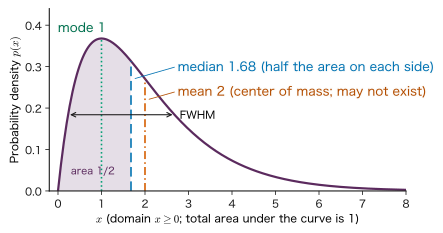
3.1.2 What it means for the mean and variance to “exist”
In Definition 2.6 of Chapter 2, we defined the expectation $\Ex[f(x)]=\int f(x)\,p(x)\,\dd x$ “when the sum or integral converges absolutely.” Restated for the mean, this becomes the following.
Definition 3.1: Existence of the mean and variance
Let $p(x)$ be the density of a continuous random variable $x$.
\begin{equation} \int_{-\infty}^{\infty}\abs{x}\,p(x)\,\dd x\lt\infty \label{eq:3-mean-exists} \end{equation}When this holds, we say that the mean $\Ex[x]=\int x\,p(x)\,\dd x$ exists. Furthermore, when $\int x^{2}p(x)\,\dd x\lt\infty$, we say that the variance $\Var[x]=\Ex[x^{2}]-\Ex[x]^{2}$ exists (is finite). In the discrete case, replace the integral by a sum.
We check with $\abs{x}$ because in $\int x\,p(x)\,\dd x$ itself the positive and negative parts cancel, and the integral can converge to different values depending on how the range is taken (Section 3.7.2). For a density whose tail decays only like $\abs{x}^{-2}$, we have $\abs{x}p(x)\sim\abs{x}^{-1}$, and its integral diverges logarithmically. The Cauchy distribution of Section 3.7 is an example. In general, it is worth remembering that if the tail of the density decays faster than $\abs{x}^{-(k+1)}$, then $\Ex[\abs{x}^{k}]$ is finite, and otherwise it diverges.
Example 3.1: Reading the exponential distribution item by item
The time $t$ until an event that “occurs at the same rate $\lambda$ at every instant” occurs, such as the waiting time until a point defect next hops or the time until a radioactive nucleus decays, follows the exponential distribution $p(t\mid\lambda)=\lambda e^{-\lambda t}$ ($t\ge0$). Let $\lambda=0.5\ \mathrm{h^{-1}}$. Find (1) the domain and parameters, (2) the normalization, (3) the mean and variance, (4) the median, and (5) the probability of waiting 4 hours or more.
Solution. (1) The domain is $t\in[0,\infty)$. The parameter is the rate $\lambda\gt0$ (unit $\mathrm{h^{-1}}$), and $1/\lambda$ is the time scale.
(2) $\int_0^\infty\lambda e^{-\lambda t}\,\dd t=\bigl[-e^{-\lambda t}\bigr]_0^\infty=0-(-1)=1$.
(3) We use integration by parts.
$$ \begin{aligned} \Ex[t]&=\int_0^\infty t\,\lambda e^{-\lambda t}\,\dd t\\ &=\bigl[-t\,e^{-\lambda t}\bigr]_0^\infty+\int_0^\infty e^{-\lambda t}\,\dd t\\ &=0+\frac{1}{\lambda}=2\ \mathrm{h}. \end{aligned} $$Similarly,
$$ \begin{aligned} \Ex[t^{2}]&=\bigl[-t^{2}e^{-\lambda t}\bigr]_0^\infty+\int_0^\infty 2t\,e^{-\lambda t}\,\dd t\\ &=\frac{2}{\lambda}\Ex[t]=\frac{2}{\lambda^{2}} \end{aligned} $$so $\Var[t]=\dfrac{2}{\lambda^{2}}-\dfrac{1}{\lambda^{2}}=\dfrac{1}{\lambda^{2}}$ $=4\ \mathrm{h^{2}}$ (standard deviation 2 h). Because the tail decays exponentially, $\Ex[t^{k}]$ is finite for every order.
(4) The cumulative distribution function is $F(t)=\int_0^t\lambda e^{-\lambda t'}\,\dd t'=1-e^{-\lambda t}$. Solving $F(t)=1/2$ gives $t=\ln 2/\lambda\approx1.386\ \mathrm{h}$. The median is smaller than the mean of 2 h (because of the tail extending to the right).
(5) $P(t\ge4)=1-F(4)$ $=e^{-0.5\times4}=e^{-2}\approx0.135$.
3.2 The Bernoulli and Binomial Distributions — Counting Successes and Failures
3.2.1 The Bernoulli distribution
Consider a trial that has only two possible outcomes, such as whether a sample “passes or fails,” or whether a thin film “shows a secondary phase or not.” We write 1 (success) for one outcome and 0 (failure) for the other.
Definition 3.2: Bernoulli distribution
For $x\in\{0,1\}$ and a parameter $\mu\in[0,1]$ (the probability of success),
\begin{equation} \mathrm{Bern}(x\mid\mu)=\mu^{x}(1-\mu)^{1-x} \label{eq:3-bern} \end{equation}is called the Bernoulli distribution. Substituting $x=1$ gives $\mu$, and substituting $x=0$ gives $1-\mu$.
Writing the distribution with exponents makes its logarithm $x\ln\mu+(1-x)\ln(1-\mu)$, a linear expression in $x$, which is convenient for computing likelihoods (Chapter 4) and for the exponential family in Section 3.11. The normalization is $\mathrm{Bern}(0\mid\mu)+\mathrm{Bern}(1\mid\mu)=(1-\mu)+\mu=1$. The mean and variance follow simply by writing out the two terms of the sum.
$$ \begin{aligned} \Ex[x]&=0\cdot(1-\mu)+1\cdot\mu=\mu,\\ \Ex[x^{2}]&=0^{2}\cdot(1-\mu)+1^{2}\cdot\mu=\mu,\\ \Var[x]&=\Ex[x^{2}]-\Ex[x]^{2}=\mu-\mu^{2}=\mu(1-\mu). \end{aligned} $$The variance is largest, $1/4$, at $\mu=1/2$, and becomes smaller the closer $\mu$ is to 0 or 1. A trial that almost always succeeds (or almost always fails) hardly varies in its outcome.
3.2.2 Derivation of the binomial distribution
Repeat the same Bernoulli trial $N$ times independently, and let $m=x_1+x_2+\dots+x_N$ be the number of successes. We find the distribution of $m$.
By independence, the probability of one particular arrangement (for example, successes in the first $m$ trials and failures in the rest) is the product of the probabilities of the individual trials, $\mu^{m}(1-\mu)^{N-m}$. An arrangement with the successes in different positions has the same probability as long as it has $m$ successes and $N-m$ failures. The number of such arrangements is the number of ways to choose the $m$ positions of the successes from $N$ positions, $\binom{N}{m}=\dfrac{N!}{m!\,(N-m)!}$. Adding the probabilities of these mutually exclusive arrangements, we obtain
Definition 3.3: Binomial distribution
For $m\in\{0,1,\dots,N\}$ and parameters $N$ (a positive integer) and $\mu\in[0,1]$,
\begin{equation} \begin{aligned}&\mathrm{Bin}(m\mid N,\mu)\\&=\binom{N}{m}\mu^{m}(1-\mu)^{N-m}\end{aligned} \label{eq:3-binom} \end{equation}is called the binomial distribution.
This is the same expression that we used as an example of a likelihood in Chapter 2, Section 2.7 (in Chapter 2 the probability of success was written $\theta$). The normalization follows from the binomial theorem $\sum_{m=0}^{N}\binom{N}{m}a^{m}b^{N-m}=(a+b)^{N}$ with $a=\mu$ and $b=1-\mu$, which gives $(\mu+1-\mu)^{N}=1$. The screen of Simulator 3.1 writes the number of successes as $x$, but it is the same quantity as $m$ in the text.
3.2.3 Derivation of the mean and variance
We could compute $\sum_m m\,\mathrm{Bin}(m\mid N,\mu)$ directly from Eq. \eqref{eq:3-binom}, but it is clearer to use the fact that $m$ is a sum of independent Bernoulli variables.
Theorem 3.1: Mean and variance of the binomial distribution
If $m\sim\mathrm{Bin}(m\mid N,\mu)$, then $\Ex[m]=N\mu$ and $\Var[m]=N\mu(1-\mu)$.
Derivation
Let $m=\sum_{n=1}^{N}x_n$, where the $x_n\sim\mathrm{Bern}(x_n\mid\mu)$ are mutually independent. By the linearity of expectation (Chapter 2, Section 2.5),
$$ \Ex[m]=\sum_{n=1}^{N}\Ex[x_n]=\sum_{n=1}^{N}\mu=N\mu . $$For the variance, extending the formula for the variance of a sum, $\Var[x+y]=\Var[x]+\Var[y]+2\Cov[x,y]$, to $N$ terms gives
$$ \begin{aligned} \Var\!\left[\sum_{n}x_n\right]&=\sum_{n}\Var[x_n]\\ &\quad+2\sum_{n\lt n'}\Cov[x_n,x_{n'}] . \end{aligned} $$Under independence the covariances are 0, so the second term vanishes and
$$ \Var[m]=\sum_{n=1}^{N}\mu(1-\mu)=N\mu(1-\mu). $$∎
Restated for the proportion of successes $m/N$, we have $\Ex[m/N]=\mu$ and $\Var[m/N]=\Var[m]/N^{2}=\mu(1-\mu)/N$ (using $\Var[ax]=a^{2}\Var[x]$). The standard deviation of the proportion is $\sqrt{\mu(1-\mu)/N}$, which is halved only when the number of trials is quadrupled. This is a special case of $\sigma^{2}/N$ in Chapter 2, Section 2.8, and in Exercise 4.2 of Chapter 4 we compare it with the width of the posterior distribution.
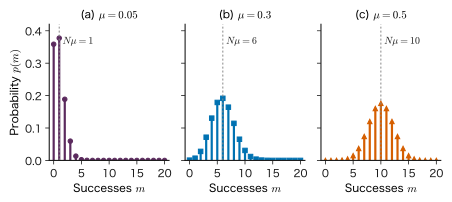
Example 3.2: Number of defectives in acceptance sampling
Twenty parts are drawn from a process with defect rate $\mu=0.05$. Assume that whether each part is defective is independent of the others. Find (1) the probability of no defectives, (2) the probability of exactly one defective, (3) the probability of two or more defectives, and (4) the mean and standard deviation of the number of defectives.
Solution. (1) $\mathrm{Bin}(0\mid20,0.05)=\binom{20}{0}0.05^{0}\,0.95^{20}$ $=0.95^{20}\approx0.3585$.
(2) Using $0.95^{19}\approx0.37735$, $\mathrm{Bin}(1\mid20,0.05)=\binom{20}{1}0.05\times0.95^{19}$ $=20\times0.05\times0.3774=0.3774$.
(3) Using the complementary event, $1-0.3585-0.3774=0.2642$.
(4) By Theorem 3.1, the mean is $N\mu=20\times0.05=1$, the variance is $N\mu(1-\mu)=20\times0.05\times0.95=0.95$, and the standard deviation is $\sqrt{0.95}\approx0.975$. From the outcome “0 defectives out of 20” (probability 36 %), we cannot conclude that “this process has no defects.”
3.3 The Categorical and Multinomial Distributions — K Possible Outcomes
3.3.1 One-hot notation and the categorical distribution
Consider a trial with $K$ possible outcomes. Examples are which of the α, β, and γ phases a single crystal grain is ($K=3$), or which word in the vocabulary the next token of a text is (in Chapter 26, $K$ is in the tens of thousands). We could write the outcome as an integer $k\in\{1,\dots,K\}$, but in machine learning we often use a one-hot vector (a vector in which only the component for the outcome is 1).
$$ \bm{x}=(x_1,\dots,x_K)^{\tp}\in\{0,1\}^{K},\qquad \sum_{k=1}^{K}x_k=1 . $$For $K=3$ and the β phase, $\bm{x}=(0,1,0)^{\tp}$.
Definition 3.4: Categorical distribution
For a parameter $\bm{\mu}=(\mu_1,\dots,\mu_K)^{\tp}$ with $\mu_k\ge0$ and $\sum_k\mu_k=1$ ($\mu_k$ is the probability of outcome $k$), the distribution of the one-hot vector $\bm{x}$,
\begin{equation} \mathrm{Cat}(\bm{x}\mid\bm{\mu})=\prod_{k=1}^{K}\mu_k^{x_k} \label{eq:3-cat} \end{equation}is called the categorical distribution. For $K=2$ it coincides with the Bernoulli distribution.
In the product, only the factor with $x_k=1$ is $\mu_k$ and the others are $\mu_j^{0}=1$, so Eq. \eqref{eq:3-cat} is a compact way of writing “the probability of outcome $k$ is $\mu_k$.” Taking the logarithm gives $\sum_k x_k\ln\mu_k$, and the cross-entropy for multiclass classification in Chapter 9 comes from this form. There are $K$ parameters, but because of the constraint that they sum to 1, only $K-1$ of them can be chosen freely.
The mean is, component by component, $\Ex[x_k]=0\cdot(1-\mu_k)+1\cdot\mu_k=\mu_k$, that is, $\Ex[\bm{x}]=\bm{\mu}$. For the covariance matrix $\bm{\Sigma}\in\R^{K\times K}$, note that $x_jx_k$ is always 0 for $j\ne k$ (the two components are never 1 at the same time), and that $x_k^{2}=x_k$ for $j=k$. Hence
$$ \begin{aligned} \Cov[x_j,x_k]&=\Ex[x_jx_k]-\mu_j\mu_k\\ &=\begin{cases}\mu_k(1-\mu_k) & (j=k)\\ -\mu_j\mu_k & (j\ne k)\end{cases} \end{aligned} $$ $$ \bm{\Sigma}=\diag(\bm{\mu})-\bm{\mu}\bm{\mu}^{\tp} . $$The off-diagonal components are negative because, when one component is 1, the others are forced to be 0.
3.3.2 The multinomial distribution
Perform the categorical trial independently $N$ times, and let $m_k=\sum_{n}x_{nk}$ be the number of times outcome $k$ occurs (so $\sum_k m_k=N$). By the same reasoning as for the binomial distribution, the probability of one particular arrangement is $\prod_k\mu_k^{m_k}$, and the number of such arrangements is the number of ways to divide $N$ items into groups of $m_1,\dots,m_K$ items, $\dfrac{N!}{m_1!\cdots m_K!}$.
Definition 3.5: Multinomial distribution
\begin{equation} \begin{aligned}&\mathrm{Mult}(m_1,\dots,m_K\mid N,\bm{\mu})\\&=\frac{N!}{m_1!\,m_2!\cdots m_K!}\prod_{k=1}^{K}\mu_k^{m_k},\\&\sum_{k}m_k=N\end{aligned} \label{eq:3-mult} \end{equation}is called the multinomial distribution. For $K=2$ it coincides with the binomial distribution.
Looking at each $m_k$ alone, it follows the binomial distribution $\mathrm{Bin}(m_k\mid N,\mu_k)$ for “outcome $k$ or not,” so $\Ex[m_k]=N\mu_k$ and $\Var[m_k]=N\mu_k(1-\mu_k)$. Moreover, adding the covariance of the categorical distribution over $N$ independent trials gives $\Cov[m_j,m_k]=-N\mu_j\mu_k$ ($j\ne k$).
Example 3.3: Counts of phases among crystal grains
In a sintered body in a two-phase region, suppose that the probabilities that a randomly chosen crystal grain is in the α, β, and γ phases are $\bm{\mu}=(0.6,0.3,0.1)^{\tp}$ (a setting for teaching purposes). Ten grains are examined independently. Find (1) the probability of 6 grains in the α phase, 3 in the β phase, and 1 in the γ phase, (2) the mean and variance of the count of each phase, and (3) the covariance of the counts of the α and β phases.
Solution. (1) Substitute into Eq. \eqref{eq:3-mult}. The number of arrangements is $\dfrac{10!}{6!\,3!\,1!}=\dfrac{3628800}{720\times6\times1}=840$. The product of probabilities is $0.6^{6}\times0.3^{3}\times0.1$ $=0.046656\times0.027\times0.1$ $=1.2597\times10^{-4}$. Therefore $840\times1.2597\times10^{-4}\approx0.106$. Even the most likely combination (the same as the combination of means) has a probability of only about 10 %.
(2) From $\Ex[m_k]=N\mu_k$ the means are 6, 3, and 1. From $\Var[m_k]=N\mu_k(1-\mu_k)$ the variances are $10\times0.6\times0.4=2.4$, $10\times0.3\times0.7=2.1$, and $10\times0.1\times0.9=0.9$.
(3) $\Cov[m_1,m_2]=-N\mu_1\mu_2$ $=-10\times0.6\times0.3=-1.8$. The tendency for a sample with many α-phase grains to have few β-phase grains appears as a negative covariance.
3.4 The Poisson Distribution — Counts of Rare Events
3.4.1 Derivation as a limit of the binomial distribution
Consider the number of photons that enter an XRD detector in 10 seconds. Of the enormous number $N$ of photons emitted by the X-ray tube, the probability $\mu$ that any one particular photon enters this detector is very small. The number that enter follows $\mathrm{Bin}(m\mid N,\mu)$, but we know neither $N$ nor $\mu$; all we know is the mean number $\lambda=N\mu$. So we take the limit $N\to\infty$ (and hence $\mu=\lambda/N\to0$) while keeping $\lambda$ fixed.
Derivation: From the binomial distribution to the Poisson distribution
Substitute $\mu=\lambda/N$ into Eq. \eqref{eq:3-binom}, fix $m$, and split the expression into three factors.
$$ \begin{aligned} &\mathrm{Bin}\!\left(m\,\middle|\,N,\frac{\lambda}{N}\right)\\ &=\underbrace{\frac{N(N-1)\cdots(N-m+1)}{N^{m}}}_{(\mathrm{i})}\cdot\frac{\lambda^{m}}{m!}\\ &\quad\times\underbrace{\left(1-\frac{\lambda}{N}\right)^{N}}_{(\mathrm{ii})}\cdot\underbrace{\left(1-\frac{\lambda}{N}\right)^{-m}}_{(\mathrm{iii})} . \end{aligned} $$Here we used $\binom{N}{m}=\dfrac{N(N-1)\cdots(N-m+1)}{m!}$ and $(1-\mu)^{N-m}=(1-\mu)^{N}(1-\mu)^{-m}$.
Factor (i) is the product of the $m$ factors $\dfrac{N}{N}\cdot\dfrac{N-1}{N}\cdots\dfrac{N-m+1}{N}$. For fixed $m$, each factor approaches 1 as $N\to\infty$, so the product also approaches 1.
Factor (ii) approaches $e^{-\lambda}$, by the definition of the exponential function $\lim_{N\to\infty}(1+a/N)^{N}=e^{a}$ with $a=-\lambda$.
Factor (iii) has the fixed exponent $-m$, so it approaches 1 because $1-\lambda/N\to1$. Putting these together,
$$ \lim_{N\to\infty}\mathrm{Bin}\!\left(m\,\middle|\,N,\frac{\lambda}{N}\right)=\frac{\lambda^{m}e^{-\lambda}}{m!} . $$∎
Definition 3.6: Poisson distribution
For $m\in\{0,1,2,\dots\}$ and a parameter $\lambda\gt0$,
\begin{equation} \mathrm{Pois}(m\mid\lambda)=\frac{\lambda^{m}e^{-\lambda}}{m!} \label{eq:3-pois} \end{equation}is called the Poisson distribution.
The domain has no upper limit (because the upper limit $N$ of the binomial distribution has gone to infinity). The distribution is normalized by the Taylor expansion of the exponential function, $e^{\lambda}=\sum_{m=0}^{\infty}\lambda^{m}/m!$: we have $\sum_m\mathrm{Pois}(m\mid\lambda)=e^{-\lambda}e^{\lambda}=1$.
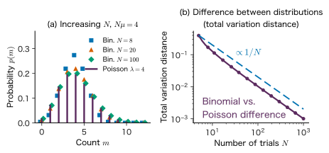
3.4.2 The mean and the variance are both λ
Theorem 3.2: Mean and variance of the Poisson distribution
If $m\sim\mathrm{Pois}(m\mid\lambda)$, then $\Ex[m]=\Var[m]=\lambda$.
Derivation
Mean: the term with $m=0$ is 0, so we start from $m=1$ and use $m/m!=1/(m-1)!$.
$$ \begin{aligned} \Ex[m]&=\sum_{m=1}^{\infty}m\frac{\lambda^{m}e^{-\lambda}}{m!}=\lambda e^{-\lambda}\sum_{m=1}^{\infty}\frac{\lambda^{m-1}}{(m-1)!}\\ &=\lambda e^{-\lambda}e^{\lambda}=\lambda . \end{aligned} $$Variance: it is easier to compute $\Ex[m(m-1)]$ than to compute $\Ex[m^{2}]$ directly. The terms with $m=0,1$ are 0, and $m(m-1)/m!=1/(m-2)!$, so
$$ \Ex[m(m-1)]=\lambda^{2}e^{-\lambda}\sum_{m=2}^{\infty}\frac{\lambda^{m-2}}{(m-2)!}=\lambda^{2} . $$Therefore $\Ex[m^{2}]=\Ex[m(m-1)]+\Ex[m]=\lambda^{2}+\lambda$ and $\Var[m]=\lambda^{2}+\lambda-\lambda^{2}=\lambda$. Taking $N\to\infty$ in the variance of the binomial distribution, $N\mu(1-\mu)=\lambda(1-\lambda/N)$, gives the same result.
∎
3.4.3 The √λ rule for counting measurements
By Theorem 3.2, the standard deviation of a measurement with a mean of $\lambda$ counts is $\sqrt{\lambda}$, and the relative variability is $\sqrt{\lambda}/\lambda=1/\sqrt{\lambda}$. For 100 counts it is 10 %, and for 10,000 counts it is 1 %. In an actual measurement $\lambda$ is not known, so we substitute the observed number of counts $m$ and estimate the standard deviation as $\sqrt{m}$. To double the precision, we must quadruple the number of counts (that is, quadruple the measurement time). This is the “$\sqrt{N}$ rule for counting” announced in Chapter 2, Section 2.9.
The Poisson distribution can be used when events occur independently, at a constant rate, and rarely. We discuss an example in which this condition breaks down in Section 3.13.
Example 3.4: Poisson probabilities and a comparison with the binomial distribution
(1) For a background with a mean of 3 counts, find the probability of receiving no counts at all and the probability of receiving 2 counts or fewer. (2) For the binomial distribution with $N=50$ and $\mu=0.08$ and the Poisson distribution with $\lambda=4$, find the probability that $3\le m\le5$ for each, and compare the means and variances.
Solution. (1) $\mathrm{Pois}(0\mid3)=e^{-3}\approx0.0498$. The probability of 2 counts or fewer is
$$ e^{-3}\left(1+3+\frac{3^{2}}{2}\right)=8.5\,e^{-3}\approx0.423 . $$(2) Binomial distribution: $\sum_{m=3}^{5}\binom{50}{m}0.08^{m}0.92^{50-m}\approx0.5659$. Poisson distribution:
$$ \begin{aligned} &e^{-4}\left(\frac{4^{3}}{6}+\frac{4^{4}}{24}+\frac{4^{5}}{120}\right)\\ &=e^{-4}(10.667+10.667+8.533)\approx0.5470 . \end{aligned} $$Both means are 4. The variance is $50\times0.08\times0.92=3.68$ for the binomial distribution and 4 for the Poisson distribution, so the binomial distribution is slightly narrower. The value $\mu=0.08$ cannot yet be called “sufficiently rare,” and a difference of about 2 % remains in the Poisson approximation.
3.5 The Univariate Gaussian Distribution — The Basic Form of Measurement Error
3.5.1 Definition
Measurement error is often made up of many small independent factors added together (temperature fluctuations, electrical noise, reading errors, and so on). By the central limit theorem of Chapter 2, Section 2.8, the sum of independent quantities with finite variance approaches a Gaussian distribution. This is why the Gaussian distribution is used as the “basic form” of measurement error.
Definition 3.7: Gaussian distribution (normal distribution)
For $x\in\R$ and parameters $\mu\in\R$ (the mean) and $\sigma^{2}\gt0$ (the variance),
\begin{equation} \begin{aligned}&\Normal(x\mid\mu,\sigma^{2})\\&=\frac{1}{\sqrt{2\pi\sigma^{2}}}\exp\!\left[-\frac{(x-\mu)^{2}}{2\sigma^{2}}\right]\end{aligned} \label{eq:3-gauss} \end{equation}is called the Gaussian distribution (or normal distribution). The second argument is the variance (not the standard deviation $\sigma$). If $x$ has a unit, then $\mu$ and $\sigma$ have the same unit as $x$, and the value of $\Normal$ has the reciprocal of the unit of $x$.
The exponent is a quadratic expression in $x$; it is maximal at $x=\mu$ and symmetric about $\mu$. The parameter $\mu$ is the location parameter and $\sigma$ is the scale parameter; there is no parameter that changes the shape. Every Gaussian distribution becomes the same curve $\Normal(z\mid0,1)$ if we relabel the axis by $z=(x-\mu)/\sigma$.
3.5.2 Derivation of the normalization, mean, and variance
Derivation: Normalization
We use the Gaussian integral $\displaystyle\int_{-\infty}^{\infty}e^{-u^{2}}\,\dd u=\sqrt{\pi}$ (proved with a double integral and polar coordinates in University Mathematics, Chapter 7, Section 7.5). Setting $u=(x-\mu)/\sqrt{2\sigma^{2}}$ gives $\dd x=\sqrt{2\sigma^{2}}\,\dd u$, and the range of integration remains $(-\infty,\infty)$.
$$ \begin{aligned} \int_{-\infty}^{\infty}e^{-(x-\mu)^{2}/(2\sigma^{2})}\,\dd x&=\sqrt{2\sigma^{2}}\int_{-\infty}^{\infty}e^{-u^{2}}\,\dd u\\ &=\sqrt{2\pi\sigma^{2}} . \end{aligned} $$The leading factor $1/\sqrt{2\pi\sigma^{2}}$ cancels this, so the total integral is 1.
∎
Derivation: Mean and variance
Mean: setting $y=x-\mu$ gives $\Ex[x]=\Ex[y]+\mu$. The function $y\,e^{-y^{2}/(2\sigma^{2})}$ is odd and its tails decay quickly, so the integral converges absolutely, and the positive and negative parts cancel to give $\Ex[y]=0$. Hence $\Ex[x]=\mu$.
Variance: we find $\Var[x]=\Ex[y^{2}]$ by integration by parts. Noting that $y\,e^{-y^{2}/(2\sigma^{2})}=-\sigma^{2}\dfrac{\dd}{\dd y}e^{-y^{2}/(2\sigma^{2})}$, and splitting $y^{2}e^{-y^{2}/(2\sigma^{2})}=y\cdot y\,e^{-y^{2}/(2\sigma^{2})}$, we obtain
$$ \begin{aligned} &\int_{-\infty}^{\infty}y^{2}e^{-y^{2}/(2\sigma^{2})}\,\dd y\\ &=\Bigl[-\sigma^{2}y\,e^{-y^{2}/(2\sigma^{2})}\Bigr]_{-\infty}^{\infty}\\ &\quad+\sigma^{2}\int_{-\infty}^{\infty}e^{-y^{2}/(2\sigma^{2})}\,\dd y\\ &=0+\sigma^{2}\sqrt{2\pi\sigma^{2}} . \end{aligned} $$Multiplying by the normalization constant $1/\sqrt{2\pi\sigma^{2}}$ gives $\Var[x]=\sigma^{2}$. As the names of the parameters suggest, $\mu$ is the mean and $\sigma^{2}$ is the variance.
∎
3.5.3 Standardization and interval probabilities
If we set $z=(x-\mu)/\sigma$ (standardization), then $z$ follows the standard Gaussian distribution $\Normal(z\mid0,1)$ (the change of variables of Chapter 2, Section 2.6: $p_z(z)=p_x(\mu+\sigma z)\cdot\sigma$). Its cumulative distribution function is written
\begin{equation} \Phi(z)=\int_{-\infty}^{z}\Normal(z'\mid0,1)\,\dd z' \label{eq:3-Phi} \end{equation}(a thin-stroke $\Phi$; it is distinct from the design matrix $\bm{\Phi}$ of Chapter 8). The function $\Phi$ cannot be written in terms of elementary functions, but it can be obtained from numerical tables or from a function (using the error function $\operatorname{erf}$, $\Phi(z)=\tfrac12[1+\operatorname{erf}(z/\sqrt2)]$). The interval probability is
\begin{equation} \begin{aligned}P(x_1\le x\le x_2)&=\Phi\!\left(\frac{x_2-\mu}{\sigma}\right)\\&\quad-\Phi\!\left(\frac{x_1-\mu}{\sigma}\right)\end{aligned} \label{eq:3-gauss-interval} \end{equation}By symmetry, $\Phi(-z)=1-\Phi(z)$ holds. The probability of falling within $\pm k\sigma$ of the mean is $2\Phi(k)-1$, so
This is called the 68–95–99.7 rule (Figure 3.4). The width that contains exactly 95 % is $\pm1.96\sigma$. Another measure of width is the full width at half maximum: solving $\exp[-(x-\mu)^{2}/(2\sigma^{2})]=1/2$ gives $x-\mu=\pm\sigma\sqrt{2\ln2}$, so it is $2\sqrt{2\ln2}\,\sigma\approx2.355\,\sigma$. Peak widths in spectroscopy are often reported as the full width at half maximum, so we use this relation to convert to the standard deviation.
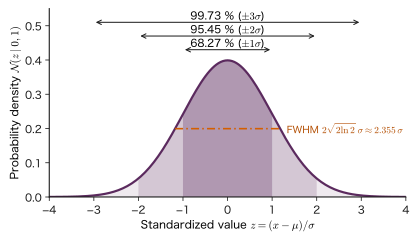
3.5.4 The sum of independent Gaussian variables
We state a property that will be used repeatedly in later chapters.
Theorem 3.3: Sum of independent Gaussian random variables
If $x_1\sim\Normal(\mu_1,\sigma_1^{2})$ and $x_2\sim\Normal(\mu_2,\sigma_2^{2})$ are independent, then $x_1+x_2\sim\Normal(\mu_1+\mu_2,\ \sigma_1^{2}+\sigma_2^{2})$. For constants $a\ne0$ and $b$, $ax_1+b\sim\Normal(a\mu_1+b,\ a^{2}\sigma_1^{2})$.
That the means and variances add follows from the formulas of Chapter 2, Section 2.5. What is new is that “the sum is again Gaussian.” This can be shown in one line using the following characteristic function. We define the characteristic function of a random variable $x$ as $\varphi_x(k)=\Ex[e^{ikx}]$ ($k$ is a real number and $i$ is the imaginary unit). This is the Fourier transform of the density $p(x)$ (up to a change of sign), so two distributions with the same characteristic function are the same distribution.
Derivation: The characteristic function of a Gaussian distribution and the distribution of a sum
To find the characteristic function of $x\sim\Normal(\mu,\sigma^{2})$, we complete the square in $x$ in the exponent:
$$ \begin{aligned} &ikx-\frac{(x-\mu)^{2}}{2\sigma^{2}}\\ &=-\frac{\bigl(x-\mu-i\sigma^{2}k\bigr)^{2}}{2\sigma^{2}}+i\mu k-\frac{\sigma^{2}k^{2}}{2} \end{aligned} $$(expanding the right-hand side returns the left-hand side). The Gaussian integral of the first term remains $\sqrt{2\pi\sigma^{2}}$ even when shifted by a complex number (the same calculation as the Fourier transform of a Gaussian function in University Mathematics, Chapter 30, Section 30.4). Therefore
\begin{equation} \begin{aligned}&\varphi_x(k)\\&=\exp\!\left(i\mu k-\frac{\sigma^{2}k^{2}}{2}\right) .\end{aligned} \label{eq:3-gauss-cf} \end{equation}For independent $x_1,x_2$ we have $\Ex[e^{ik(x_1+x_2)}]=\Ex[e^{ikx_1}]\,\Ex[e^{ikx_2}]$ (Chapter 2, Section 2.3: for independent variables, the expectation of a product is the product of the expectations), so
$$ \begin{aligned} &\varphi_{x_1+x_2}(k)\\ &=e^{i\mu_1k-\sigma_1^{2}k^{2}/2}\,e^{i\mu_2k-\sigma_2^{2}k^{2}/2}\\ &=\exp\!\left(i(\mu_1+\mu_2)k-\frac{(\sigma_1^{2}+\sigma_2^{2})k^{2}}{2}\right). \end{aligned} $$This is exactly the characteristic function of $\Normal(\mu_1+\mu_2,\sigma_1^{2}+\sigma_2^{2})$.
∎
By the same idea, the mean $\bar{x}$ of an i.i.d. sample with $x_n\sim\Normal(\mu,\sigma^{2})$ follows $\Normal(\mu,\sigma^{2}/N)$ exactly, for any $N$. In Section 3.7, we will see that the same argument leads to something quite different for the Cauchy distribution.
Example 3.5: A thickness specification for a thin film
Suppose the thickness $x$ of a thin film made by sputtering follows $\Normal(x\mid200\ \mathrm{nm},\,(4\ \mathrm{nm})^{2})$ (a setting for teaching purposes). Find (1) the fraction that falls within the specification $195\sim205\ \mathrm{nm}$ and (2) the fraction that exceeds $210\ \mathrm{nm}$. (3) On top of this film, a film whose thickness follows $\Normal(50\ \mathrm{nm},(3\ \mathrm{nm})^{2})$ is stacked independently. Find the distribution of the total thickness of the two layers. You may use $\Phi(1.25)=0.8944$ and $\Phi(2.5)=0.99379$.
Solution. (1) Standardizing gives $z_1=(195-200)/4=-1.25$ and $z_2=(205-200)/4=1.25$. From Eq. \eqref{eq:3-gauss-interval} and $\Phi(-z)=1-\Phi(z)$,
$$ \begin{aligned} &\Phi(1.25)-\Phi(-1.25)\\ &=2\Phi(1.25)-1\\ &=2\times0.8944-1=0.7887 . \end{aligned} $$About 79 % fall within the specification.
(2) Since $z=(210-200)/4=2.5$, we get $1-\Phi(2.5)=1-0.99379=0.0062$ (about 0.6 %).
(3) By Theorem 3.3, the total is $\Normal(200+50,\ 4^{2}+3^{2})=\Normal(250\ \mathrm{nm},\ 25\ \mathrm{nm^{2}})$, and the standard deviation is $5\ \mathrm{nm}$. The standard deviation is $\sqrt{4^{2}+3^{2}}=5$, not $4+3=7$ (independent variabilities add in the variance).
Simulator 3.1: Distribution shapes and interval probabilities
This simulator draws the shapes of the eight distributions of this chapter (binomial, Poisson, Gaussian, Cauchy, gamma, beta, Student's t, and Weibull) and finds the probability of falling in an interval as the difference of cumulative distribution functions, $F(x_2)-F(x_1)$. For distributions whose mean or variance does not exist, it also displays the reason.
Open in a separate window at full size →
Operate and Observe
- Look at the readout with the defaults right after opening (first distribution “Gaussian distribution,” mean $\mu=0$, standard deviation $\sigma=1$, interval $[-1,1]$) → it shows $P=\Phi(1.000)-\Phi(-1.000)$ $=0.8413-0.1587=0.6827$. Compare this with Eq. \eqref{eq:3-gauss-interval}. In the cumulative distribution function plot below, confirm that the length of the vertical arrow equals the filled area in the upper plot.
- Press the interval button “± 2 standard deviations” → $P=0.9545$. Then move the left-end $x_1$ and right-end $x_2$ sliders to $\pm3$ → $0.9973$. Compare the full width at half maximum of 2.3548 in the readout with $2\sqrt{2\ln2}\,\sigma$.
- Press “Binomial and Poisson (Nμ = λ)” under “Examples to compare” → the first distribution becomes the binomial distribution (number of trials $N=50$, success probability $\mu=0.08$), and the Poisson distribution with $\lambda=4$ is overlaid as the second distribution with a dashed line. Confirm in the readout the means 4.000 and 4.000 and the variances 3.680 and 4.000, and compare the probabilities of the interval $[3,5]$, 0.5659 and 0.5470, with Example 3.4 (2).
- Choose the “Gamma distribution” and vary the shape $a$ through 0.5, 1, 2, and 5 → for $a\lt1$ the density diverges as $x\to0$; at $a=1$ it is the exponential distribution (Example 3.1); the larger $a$ is, the more the peak shifts to the right and the closer the curve comes to being symmetric (Section 3.8).
Questions After Operating
- If you bring the interval in step 1 close to $[-1.96,\,1.96]$, what value does $P$ approach? What is this width called?
Sample answers
It approaches $2\Phi(1.96)-1=0.9500$. The mean $\pm1.96\sigma$ is the width that contains 95 % probability for a Gaussian distribution. The slider step is about 1/200 of the display range, so even if you cannot hit exactly 1.96, you can read a value around 0.95.
- In step 3, why is the variance of the binomial distribution smaller than that of the Poisson distribution? What happens if you increase $N$ to 200 and lower $\mu$ to $4/200=0.02$?
Sample answers
The variance of the binomial distribution is $N\mu(1-\mu)=\lambda(1-\mu)$; because the number of successes has the upper limit $N$, it is smaller than the Poisson distribution's $\lambda$ by a factor of $(1-\mu)$. With $\mu=0.02$ the variance becomes $4\times0.98=3.92$, which is close to 4, and the difference in the interval probabilities also becomes smaller (the limit of Section 3.4.1).
The simulator restricts the range of the parameters (for example, $N$ of the binomial distribution goes only up to 200), but the equations themselves are the same over any range.
3.6 The Multivariate Gaussian Distribution — Ellipses, Marginal Distributions, and Conditional DistributionsDetailed Route
3.6.1 Definitions and notation
Several quantities can vary together, as with the relative density and hardness of a sintered body, or the composition and lattice constant of a mixed crystal. The most fundamental distribution for a column vector $\bm{x}=(x_1,\dots,x_D)^{\tp}\in\R^{D}$ that collects $D$ such quantities is the multivariate Gaussian distribution.
Definition 3.8: Multivariate Gaussian distribution
For a mean vector $\bm{\mu}\in\R^{D}$ and a symmetric positive definite covariance matrix $\bm{\Sigma}\in\R^{D\times D}$, the distribution
\begin{equation} \begin{aligned}&\Normal(\bm{x}\mid\bm{\mu},\bm{\Sigma})\\&=\frac{1}{(2\pi)^{D/2}\abs{\bm{\Sigma}}^{1/2}}\\&\quad\times\exp\Bigl[-\frac12(\bm{x}-\bm{\mu})^{\tp}\\&\qquad\qquad\ \bm{\Sigma}^{-1}(\bm{x}-\bm{\mu})\Bigr]\end{aligned} \label{eq:3-mvn} \end{equation}is called the multivariate Gaussian distribution. Here $\abs{\bm{\Sigma}}$ is the determinant. For $D=1$ it coincides with Eq. \eqref{eq:3-gauss}.
The square root $\Delta$ of the quadratic form in the exponent
\begin{equation} \Delta^{2}=(\bm{x}-\bm{\mu})^{\tp}\bm{\Sigma}^{-1}(\bm{x}-\bm{\mu}) \label{eq:3-mahal} \end{equation}is called the Mahalanobis distance. Since the density is determined by $\Delta$ alone, the set of points at which $\Delta$ is constant is a “surface of equal probability.” If $\bm{\Sigma}=\sigma^{2}\bm{I}$, then $\Delta=\norm{\bm{x}-\bm{\mu}}/\sigma$, which is the ordinary distance measured in units of $\sigma$. For a general $\bm{\Sigma}$, $\Delta$ remains small even for a far-away point in a direction of large variability, and $\Delta$ is large even for a nearby point in a direction of small variability.
We require positive definiteness (that is, $\bm{a}^{\tp}\bm{\Sigma}\bm{a}\gt0$ for every $\bm{a}\ne\bm{0}$) because $\bm{\Sigma}^{-1}$ and $\abs{\bm{\Sigma}}^{-1/2}$ must exist. A covariance matrix is always positive semidefinite (Chapter 2, Section 2.5), but if some linear combination does not vary at all, as when the compositions always sum to 1, then an eigenvalue is 0 and Eq. \eqref{eq:3-mvn} cannot be written. In that case we reduce the number of variables by one.
3.6.2 Viewing it through the eigendecomposition: ellipses and normalization
Since $\bm{\Sigma}$ is a real symmetric matrix, it can be diagonalized with orthonormal eigenvectors $\bm{u}_1,\dots,\bm{u}_D$ and real eigenvalues $\lambda_1,\dots,\lambda_D$ (for the details of diagonalizing a real symmetric matrix, see Appendix A, Section A.3). Because it is positive definite, all $\lambda_i\gt0$.
$$ \bm{\Sigma}\bm{u}_i=\lambda_i\bm{u}_i,\qquad \bm{u}_i^{\tp}\bm{u}_j=\begin{cases}1&(i=j)\\0&(i\ne j)\end{cases} $$ $$ \bm{\Sigma}=\sum_{i=1}^{D}\lambda_i\bm{u}_i\bm{u}_i^{\tp},\qquad \bm{\Sigma}^{-1}=\sum_{i=1}^{D}\frac{1}{\lambda_i}\bm{u}_i\bm{u}_i^{\tp} $$(The formula for $\bm{\Sigma}^{-1}$ can be checked by multiplying it by the formula for $\bm{\Sigma}$ and using $\sum_i\bm{u}_i\bm{u}_i^{\tp}=\bm{I}$.) Using the coordinates along the eigenvectors, $y_i=\bm{u}_i^{\tp}(\bm{x}-\bm{\mu})$, the Mahalanobis distance becomes
\begin{equation} \begin{aligned}&\Delta^{2}=\sum_{i=1}^{D}\frac{y_i^{2}}{\lambda_i},\\&y_i=\bm{u}_i^{\tp}(\bm{x}-\bm{\mu})\end{aligned} \label{eq:3-mahal-eig} \end{equation}The surface $\Delta=c$ is an ellipse (an ellipsoid for $D=3$) centered at $\bm{\mu}$, with radius $c\sqrt{\lambda_i}$ in the direction of $\bm{u}_i$ (Figure 3.5). The larger the eigenvalue, the more widely the distribution spreads in that direction.
In these coordinates, normalization is also easy. The map $\bm{y}=\bm{U}^{\tp}(\bm{x}-\bm{\mu})$ (where $\bm{U}\in\R^{D\times D}$ is the orthogonal matrix whose columns are the $\bm{u}_i$) is a rotation followed by a translation, so the absolute value of the Jacobian determinant is $\abs{\det\bm{U}^{\tp}}=1$. Also, $\abs{\bm{\Sigma}}=\prod_i\lambda_i$. Therefore
$$ \Normal(\bm{x}\mid\bm{\mu},\bm{\Sigma})\,\dd\bm{x}=\prod_{i=1}^{D}\frac{1}{\sqrt{2\pi\lambda_i}}\exp\!\left(-\frac{y_i^{2}}{2\lambda_i}\right)\dd y_i $$so the distribution of $\bm{y}$ is a product of independent univariate Gaussian distributions $\Normal(y_i\mid0,\lambda_i)$. Each factor is normalized, so the whole is normalized too (for a derivation as a multivariate Gaussian integral, see Appendix A, Section A.5). Furthermore, from $\Ex[\bm{y}]=\bm{0}$ and $\Cov[\bm{y}]=\diag(\lambda_1,\dots,\lambda_D)$, returning to $\bm{x}=\bm{\mu}+\bm{U}\bm{y}$ we obtain $\Ex[\bm{x}]=\bm{\mu}$ and $\Cov[\bm{x}]=\bm{U}\diag(\lambda_i)\bm{U}^{\tp}=\bm{\Sigma}$. As the names of the parameters suggest, $\bm{\mu}$ is the mean and $\bm{\Sigma}$ is the covariance matrix.
The probability of falling inside an ellipse can also be computed in terms of $\bm{y}$. For $D=2$ we obtain $P(\Delta\le c)=1-e^{-c^{2}/2}$ (Exercise 3.5), which gives 0.393, 0.865, and 0.989 for $c=1,2,3$, respectively. Note that these are smaller than the univariate 68–95–99.7 values. The higher the dimension, the smaller the probability of falling “within one standard deviation of the mean.”
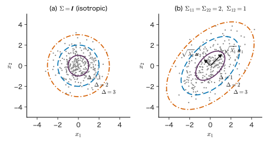
3.6.3 A linear transformation of a Gaussian is still Gaussian
Theorem 3.4: Linear transformation of a multivariate Gaussian distribution
Let $\bm{x}\sim\Normal(\bm{\mu},\bm{\Sigma})$ with $\bm{x}\in\R^{D}$, and let $\bm{A}\in\R^{M\times D}$ (with $M\le D$ and rank $M$) and $\bm{b}\in\R^{M}$ be constants. Then $\bm{y}=\bm{A}\bm{x}+\bm{b}\in\R^{M}$ follows $\Normal(\bm{A}\bm{\mu}+\bm{b},\ \bm{A}\bm{\Sigma}\bm{A}^{\tp})$.
The formulas for the mean and covariance follow from the same computation as in Exercise 2.3 (3) of Chapter 2. That the distribution is Gaussian follows from the fact that substituting $\bm{k}\to\bm{A}^{\tp}\bm{k}$ into the multivariate characteristic function $\Ex[e^{i\bm{k}^{\tp}\bm{x}}]=\exp\bigl(i\bm{k}^{\tp}\bm{\mu}-\tfrac12\bm{k}^{\tp}\bm{\Sigma}\bm{k}\bigr)$ gives the same form. In particular, taking $\bm{A}$ to be “a matrix that extracts some of the components,” we find that the distribution of a subset of the components of a multivariate Gaussian distribution (the marginal distribution) is the Gaussian distribution obtained by extracting the corresponding parts of the mean vector and the covariance matrix. In Chapter 8, we use this theorem to obtain the distribution of predicted values from the distribution of the weights.
3.6.4 Deriving the marginal and conditional distributions in two dimensions
Suppose that two quantities $x_a$ and $x_b$ (both scalars) follow a two-dimensional Gaussian distribution. Using the means $\mu_a,\mu_b$, the standard deviations $\sigma_a,\sigma_b\gt0$, and the correlation coefficient $\rho$ ($\abs{\rho}\lt1$), the covariance matrix, its inverse matrix, and its determinant are
$$ \bm{\Sigma}=\begin{pmatrix}\sigma_a^{2}&\rho\sigma_a\sigma_b\\ \rho\sigma_a\sigma_b&\sigma_b^{2}\end{pmatrix}, $$ $$ \bm{\Sigma}^{-1}=\frac{1}{\abs{\bm{\Sigma}}}\begin{pmatrix}\sigma_b^{2}&-\rho\sigma_a\sigma_b\\ -\rho\sigma_a\sigma_b&\sigma_a^{2}\end{pmatrix}, $$ $$ \abs{\bm{\Sigma}}=\sigma_a^{2}\sigma_b^{2}(1-\rho^{2}) $$(the formula for the inverse of a 2×2 matrix). The conditional distribution $p(x_a\mid x_b)$ expresses “how our best guess about $x_a$ changes once we know the value of $x_b$,” and finding it is the goal of this section.
Derivation: Decomposition by completing the square
We use the standardized variables $u=(x_a-\mu_a)/\sigma_a$ and $v=(x_b-\mu_b)/\sigma_b$. Substituting the $\bm{\Sigma}^{-1}$ above, the quadratic form in the exponent becomes
$$ \Delta^{2}=\frac{1}{1-\rho^{2}}\left(u^{2}-2\rho uv+v^{2}\right). $$We complete the square in $u$ inside the parentheses. Since $u^{2}-2\rho uv=(u-\rho v)^{2}-\rho^{2}v^{2}$,
$$ u^{2}-2\rho uv+v^{2}=(u-\rho v)^{2}+(1-\rho^{2})v^{2}, $$ $$ \Delta^{2}=\frac{(u-\rho v)^{2}}{1-\rho^{2}}+v^{2}. $$If we also split the normalization constant $\dfrac{1}{2\pi\abs{\bm{\Sigma}}^{1/2}}=\dfrac{1}{2\pi\sigma_a\sigma_b\sqrt{1-\rho^{2}}}$ into two parts, the joint density becomes a product of two factors.
$$ \begin{aligned} p(x_a,x_b)&= \underbrace{\frac{1}{\sqrt{2\pi}\,\sigma_a\sqrt{1-\rho^{2}}}e^{-\frac{(u-\rho v)^{2}}{2(1-\rho^{2})}}}_{(\mathrm{A})}\\ &\quad\times \underbrace{\frac{1}{\sqrt{2\pi}\,\sigma_b}e^{-v^{2}/2}}_{(\mathrm{B})} . \end{aligned} $$(B) is a function of $x_b$ only, and if we substitute back $v=(x_b-\mu_b)/\sigma_b$, it is exactly $\Normal(x_b\mid\mu_b,\sigma_b^{2})$.
Now we view (A) as a function of $x_a$. Since $u-\rho v=\dfrac{x_a-\mu_a}{\sigma_a}-\rho v=\dfrac{x_a-(\mu_a+\rho\sigma_a v)}{\sigma_a}$,
$$ \frac{(u-\rho v)^{2}}{2(1-\rho^{2})}=\frac{\bigl(x_a-(\mu_a+\rho\sigma_a v)\bigr)^{2}}{2\sigma_a^{2}(1-\rho^{2})}. $$Hence (A) is the density of a Gaussian distribution with mean $\mu_a+\rho\sigma_a v$ and variance $\sigma_a^{2}(1-\rho^{2})$, and its integral over $x_a$ is 1.
Marginalization: $p(x_b)=\int p(x_a,x_b)\,\dd x_a$ $=(\mathrm{B})\times\int(\mathrm{A})\,\dd x_a=(\mathrm{B})$. That is, $p(x_b)=\Normal(x_b\mid\mu_b,\sigma_b^{2})$.
Conditioning: comparing with the product rule $p(x_a,x_b)=p(x_a\mid x_b)\,p(x_b)$ (Chapter 2, Section 2.2), we see that (A) is $p(x_a\mid x_b)$. Substituting back $v$,
$$ \begin{aligned} p(x_a\mid x_b)=\Normal\Bigl(x_a\,\Big|\,&\mu_a+\rho\frac{\sigma_a}{\sigma_b}(x_b-\mu_b),\\ &\sigma_a^{2}(1-\rho^{2})\Bigr). \end{aligned} $$If we swap the roles of $a$ and $b$, we obtain $p(x_a)=\Normal(x_a\mid\mu_a,\sigma_a^{2})$ and $p(x_b\mid x_a)$ in the same way.
∎
Rewriting in terms of the components of the covariance matrix, $\Sigma_{aa}=\sigma_a^{2}$, $\Sigma_{ab}=\Sigma_{ba}=\rho\sigma_a\sigma_b$, $\Sigma_{bb}=\sigma_b^{2}$, we have $\rho\sigma_a/\sigma_b=\Sigma_{ab}\Sigma_{bb}^{-1}$ and $\sigma_a^{2}(1-\rho^{2})=\Sigma_{aa}-\Sigma_{ab}\Sigma_{bb}^{-1}\Sigma_{ba}$, so the result can be written as
\begin{equation} \begin{aligned} &p(x_a\mid x_b)=\Normal(x_a\mid\mu_{a\mid b},\sigma_{a\mid b}^{2}),\\ &\mu_{a\mid b}=\mu_a+\Sigma_{ab}\Sigma_{bb}^{-1}(x_b-\mu_b),\\ &\sigma_{a\mid b}^{2}=\Sigma_{aa}-\Sigma_{ab}\Sigma_{bb}^{-1}\Sigma_{ba} \end{aligned} \label{eq:3-cond-2d} \end{equation}This form holds unchanged even when $x_a$ and $x_b$ are vectors.
3.6.5 The general formula
Split $\bm{x}\in\R^{D}$ into a first part $\bm{x}_a\in\R^{D_a}$ and a second part $\bm{x}_b\in\R^{D_b}$ (with $D_a+D_b=D$), and partition the mean vector and the covariance matrix in the same way.
$$ \bm{x}=\begin{pmatrix}\bm{x}_a\\ \bm{x}_b\end{pmatrix},\qquad \bm{\mu}=\begin{pmatrix}\bm{\mu}_a\\ \bm{\mu}_b\end{pmatrix}, $$ $$ \bm{\Sigma}=\begin{pmatrix}\bm{\Sigma}_{aa}&\bm{\Sigma}_{ab}\\ \bm{\Sigma}_{ba}&\bm{\Sigma}_{bb}\end{pmatrix}. $$Here $\bm{\Sigma}_{aa}\in\R^{D_a\times D_a}$, $\bm{\Sigma}_{ab}\in\R^{D_a\times D_b}$, $\bm{\Sigma}_{ba}=\bm{\Sigma}_{ab}^{\tp}\in\R^{D_b\times D_a}$, and $\bm{\Sigma}_{bb}\in\R^{D_b\times D_b}$.
Theorem 3.5: Marginal and conditional distributions of a multivariate Gaussian distribution
If $\bm{x}\sim\Normal(\bm{\mu},\bm{\Sigma})$ is partitioned as above, the following hold.
(1) Marginal distribution: $p(\bm{x}_a)=\Normal(\bm{x}_a\mid\bm{\mu}_a,\bm{\Sigma}_{aa})$.
(2) Conditional distribution: $p(\bm{x}_a\mid\bm{x}_b)=\Normal(\bm{x}_a\mid\bm{\mu}_{a\mid b},\bm{\Sigma}_{a\mid b})$. The mean $\bm{\mu}_{a\mid b}\in\R^{D_a}$ and the covariance $\bm{\Sigma}_{a\mid b}\in\R^{D_a\times D_a}$ are given by Eqs. \eqref{eq:3-cond-mean} and \eqref{eq:3-cond-cov} below.
The proof uses the inverse of a block matrix (the Schur complement) and carries out the same completing of the square as in the two-dimensional case; it is placed in Appendix A, Section A.6. Part (1) also follows from Theorem 3.4.
We list three things that can be read off from this theorem.
- The conditional mean is a linear function of $\bm{x}_b$. If $\bm{x}_b$ deviates from its mean by $\bm{x}_b-\bm{\mu}_b$, our guess for $\bm{x}_a$ deviates by that amount multiplied by the “correlation factor” $\bm{\Sigma}_{ab}\bm{\Sigma}_{bb}^{-1}$. In two dimensions this is a straight line with slope $\rho\sigma_a/\sigma_b$, which is the same as the least-squares regression line.
- The conditional covariance does not depend on the value of $\bm{x}_b$; it is $\bm{\Sigma}_{aa}$ minus the positive semidefinite matrix $\bm{\Sigma}_{ab}\bm{\Sigma}_{bb}^{-1}\bm{\Sigma}_{ba}$. That is, observation can only reduce, never increase, the uncertainty (both properties are consequences of the joint distribution being Gaussian, and they do not hold if, in real data, the variability changes with the value). In two dimensions the variance is multiplied by $(1-\rho^{2})$. If $\rho=0$ it does not decrease (the variables are independent, so $x_b$ tells us nothing about $x_a$).
- Gaussian process regression in Chapter 12 applies Eqs. \eqref{eq:3-cond-mean} and \eqref{eq:3-cond-cov} by taking the function values at the observed points as $\bm{x}_b$ and the function values at the points we want to predict as $\bm{x}_a$. This theorem is the heart of Chapter 12 (Gaussian processes).
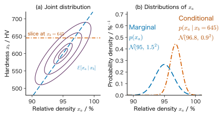
Example 3.6: Estimating relative density from hardness
Suppose that the relative density $x_a$ (%) and the Vickers hardness $x_b$ (HV) of a sintered body follow a two-dimensional Gaussian distribution with means $\mu_a=95$, $\mu_b=600$, standard deviations $\sigma_a=1.5$, $\sigma_b=30$, and correlation coefficient $\rho=0.8$ (a setting for teaching purposes). (1) We measured only the hardness and obtained $x_b=645$. Find the conditional distribution of the relative density. (2) Find the squared Mahalanobis distance $\Delta^{2}$ of the point $(x_a,x_b)=(97,645)$, and compare it with the case in which the correlation is ignored (treated as $\rho=0$).
Solution. (1) Substitute into the result of Section 3.6.4. The conditional mean is
$$ \begin{aligned} &\mu_a+\rho\frac{\sigma_a}{\sigma_b}(x_b-\mu_b)\\ &=95+0.8\times\frac{1.5}{30}\times(645-600)\\ &=95+0.04\times45=96.8\ \%. \end{aligned} $$The conditional variance is $\sigma_a^{2}(1-\rho^{2})=2.25\times(1-0.64)=0.81\ \%^{2}$, and the standard deviation is 0.9 %. By learning the hardness, the center of our guess moved from 95 % to 96.8 %, and its width narrowed from 1.5 % to 0.9 %.
(2) We have $u=(97-95)/1.5=1.333$ and $v=(645-600)/30=1.5$. Substituting into $\Delta^{2}=(u^{2}-2\rho uv+v^{2})/(1-\rho^{2})$ of Section 3.6.4 gives
$$ \begin{aligned} \Delta^{2}&=\frac{1.778-2\times0.8\times1.333\times1.5+2.25}{0.36}\\ &=\frac{1.778-3.200+2.25}{0.36}=\frac{0.828}{0.36}\approx2.30 . \end{aligned} $$If the correlation is ignored, $u^{2}+v^{2}=1.778+2.25\approx4.03$. This point is a combination in which “both the density and the hardness are above their means,” which is likely to occur under a positive correlation, so $\Delta$ becomes smaller when the correlation is taken into account. If the correlation is ignored, an ordinary sample is easily misjudged to be an outlier.
3.7 The Lorentzian Line Shape and the Cauchy Distribution — A Distribution Without a MeanDetailed Route
3.7.1 From a spectral line shape to a probability distribution
An excited state of an atom or molecule decays with a finite lifetime $\tau$. If we Fourier transform a signal whose oscillation continues while decaying as $e^{-t/(2\tau)}$, the spectral intensity takes the form $1/[(\omega-\omega_0)^{2}+\gamma^{2}]$ around the center frequency $\omega_0$ ($\gamma$ is proportional to the inverse of the lifetime). This is called a Lorentzian line shape (for the calculation showing that the Fourier transform of a two-sided exponential function is a Lorentzian, see University Mathematics, Chapter 30, Section 30.5). If we normalize it so that the area is 1, it can be regarded as a probability density.
Definition 3.9: Cauchy distribution (Lorentzian)
For $x\in\R$ and parameters $x_0\in\R$ (center) and $\gamma\gt0$ (half width at half maximum), the distribution
\begin{equation} \begin{aligned}&p(x\mid x_0,\gamma)\\&=\frac{1}{\pi}\,\frac{\gamma}{(x-x_0)^{2}+\gamma^{2}}\end{aligned} \label{eq:3-cauchy} \end{equation}is called the Cauchy distribution. In physics the same function is called a Lorentzian.
We check the normalization. Let $y=x-x_0$ and use $\dfrac{\dd}{\dd y}\arctan\dfrac{y}{\gamma}=\dfrac{\gamma}{y^{2}+\gamma^{2}}$. Then
$$ \begin{aligned} \int_{-\infty}^{\infty}\frac{1}{\pi}\frac{\gamma}{y^{2}+\gamma^{2}}\,\dd y&=\frac{1}{\pi}\Bigl[\arctan\frac{y}{\gamma}\Bigr]_{-\infty}^{\infty}\\ &=\frac{1}{\pi}\left(\frac{\pi}{2}+\frac{\pi}{2}\right)=1 . \end{aligned} $$The same calculation gives the cumulative distribution function $F(x)=\dfrac12+\dfrac1\pi\arctan\dfrac{x-x_0}{\gamma}$. Since $F(x_0)=1/2$, the median is $x_0$; since $F(x_0\pm\gamma)=1/2\pm1/4$, the quartiles are $x_0\pm\gamma$ (interquartile range $2\gamma$). The maximum of the density is $1/(\pi\gamma)$, and it falls to half of this when $(x-x_0)^{2}+\gamma^{2}=2\gamma^{2}$, that is, when $x=x_0\pm\gamma$, so the full width at half maximum (FWHM) is $2\gamma$. The median, mode, quartiles, and FWHM are all well defined.
3.7.2 Showing by integration that the mean does not exist
We examine the condition \eqref{eq:3-mean-exists} of Definition 3.1. Let $y=x-x_0$ and compute the integral truncated to the range $\abs{y}\le R$. The integrand is an even function, so we double the integral over $[0,R]$ and use $\dfrac{\dd}{\dd y}\ln(y^{2}+\gamma^{2})=\dfrac{2y}{y^{2}+\gamma^{2}}$.
\begin{equation} \begin{aligned}&\int_{-R}^{R}\abs{y}\,\frac{1}{\pi}\frac{\gamma}{y^{2}+\gamma^{2}}\,\dd y\\&=\frac{2\gamma}{\pi}\int_{0}^{R}\frac{y}{y^{2}+\gamma^{2}}\,\dd y\\&=\frac{\gamma}{\pi}\ln\!\left(1+\frac{R^{2}}{\gamma^{2}}\right)\end{aligned} \label{eq:3-cauchy-abs} \end{equation}For $\gamma=1$ and $R=10,\ 100,\ 1000,\ 10^{6}$, the values are 1.47, 2.93, 4.40, and 8.80: each time $R$ is multiplied by 10, the value keeps increasing by about 1.47, and it diverges as $R\to\infty$. Therefore the mean of the Cauchy distribution does not exist. In the tail $p(x)\sim\gamma/(\pi x^{2})$, so $\abs{x}p(x)\sim1/x$; the cause is that the integral of this diverges logarithmically.
You may think, “Since the distribution is symmetric, isn't the mean $x_0$?” Indeed, if we take the integration range to have the same width $R$ on the left and right of $x_0$ and let $R\to\infty$, the odd function cancels, giving $\int_{-R}^{R}y\,p\,\dd y=0$, and we obtain $x_0$ (this is called the principal value). However, if we take an asymmetric range such as $[-R,\,2R]$, then
$$ \begin{aligned} &\int_{-R}^{2R}\frac{y}{\pi}\frac{\gamma}{y^{2}+\gamma^{2}}\,\dd y\\ &=\frac{\gamma}{2\pi}\ln\frac{4R^{2}+\gamma^{2}}{R^{2}+\gamma^{2}}\\ &\longrightarrow\ \frac{\gamma}{2\pi}\ln4=\frac{\gamma\ln2}{\pi}\approx0.221\,\gamma \end{aligned} $$(the arrow denotes the limit $R\to\infty$) and the answer changes with the choice of range. It is the condition of absolute convergence that guarantees that the expectation is “determined as a single value regardless of how the range is taken,” and the Cauchy distribution does not satisfy it. The same holds for the variance: $\int_{-R}^{R}y^{2}p\,\dd y$ $=\dfrac{2\gamma}{\pi}\bigl(R-\gamma\arctan(R/\gamma)\bigr)$ diverges in proportion to $R$.
3.7.3 The sample mean does not settle down
The law of large numbers and the central limit theorem in Chapter 2, Section 2.8 assumed that the variance is finite. For the Cauchy distribution this assumption fails. We investigate what happens by using the characteristic function.
Derivation: The distribution of the sample mean of the Cauchy distribution
First we show that the characteristic function of the Cauchy distribution with $x_0=0$ is $e^{-\gamma\abs{k}}$. Going in the reverse direction, the inverse Fourier transform of $e^{-\gamma\abs{k}}$ is
$$ \begin{aligned} &\frac{1}{2\pi}\int_{-\infty}^{\infty}e^{-\gamma\abs{k}}e^{-iky}\,\dd k\\ &=\frac{1}{2\pi}\Bigl[\int_{0}^{\infty}e^{-(\gamma+iy)k}\,\dd k\\ &\qquad\ +\int_{0}^{\infty}e^{-(\gamma-iy)k}\,\dd k\Bigr]\\ &=\frac{1}{2\pi}\left(\frac{1}{\gamma+iy}+\frac{1}{\gamma-iy}\right)\\ &=\frac{1}{2\pi}\cdot\frac{2\gamma}{\gamma^{2}+y^{2}}=\frac{1}{\pi}\frac{\gamma}{y^{2}+\gamma^{2}} \end{aligned} $$which returns the density of the Cauchy distribution (in the second integral we substituted $k\to-k$). Since the Fourier transform is one-to-one, $\Ex[e^{iky}]=e^{-\gamma\abs{k}}$. Shifting the center to $x_0$ multiplies this by $e^{ikx_0}$, so
\begin{equation} \begin{aligned}\varphi(k)&=\Ex[e^{ikx}]\\&=\exp\bigl(ix_0k-\gamma\abs{k}\bigr) .\end{aligned} \label{eq:3-cauchy-cf} \end{equation}Next, when $x_1,\dots,x_n$ independently follow the same Cauchy distribution, the characteristic function of the sample mean $\bar{x}_n=\frac1n\sum_jx_j$ splits into a product by independence:
$$ \begin{aligned} \Ex\!\left[e^{ik\bar{x}_n}\right]&=\prod_{j=1}^{n}\Ex\!\left[e^{i(k/n)x_j}\right]=\left[e^{ix_0k/n-\gamma\abs{k}/n}\right]^{n}\\ &=\exp\bigl(ix_0k-\gamma\abs{k}\bigr). \end{aligned} $$This is the same as Eq. \eqref{eq:3-cauchy-cf}. Hence, no matter what $n$ is, $\bar{x}_n$ follows the same Cauchy distribution as a single observation, $p(\bar{x}_n\mid x_0,\gamma)$.
∎
For the Gaussian distribution, the same calculation gives the characteristic function of $\bar{x}_n$ as $\exp(i\mu k-\sigma^{2}k^{2}/(2n))$, and the variance shrank to $1/n$. The difference lies in the power of $k$ in the exponent. For $k^{2}$, the product of $n$ factors shrinks as $(k/n)^{2}\times n=k^{2}/n$, but for $\abs{k}$ it returns to the original, $(\abs{k}/n)\times n=\abs{k}$.
As a result, even for the mean of 10,000 samples, the probability of deviating from the center by $\gamma$ or more remains the same as for a single observation, $1-F(x_0+\gamma)+F(x_0-\gamma)=1/2$. In contrast, the sample median is not dragged by large outliers, and for large $n$ it approaches the center $x_0$ with a standard deviation of about $\pi\gamma/(2\sqrt{n})$ (the value obtained by substituting $p(x_0)=1/(\pi\gamma)$ into the approximate formula $1/(2p(x_0)\sqrt{n})$ for the distribution of the median).
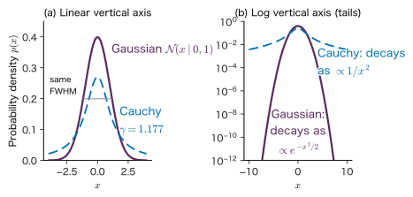
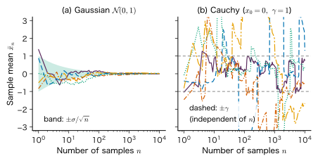
Example 3.7: The tail of the Cauchy distribution and the tail of the Gaussian distribution
(1) Find the probability that $\abs{x-x_0}\gt3\gamma$ for the Cauchy distribution. (2) For the standard Gaussian distribution and the Cauchy distribution with the same full width at half maximum, compare the probability of $-1\le x\le1$ and the probability of $\abs{x}\gt3$. You may use $\arctan(1/1.1774)=0.7041$ and $\arctan(3/1.1774)=1.1968$.
Solution. (1) From the expression for $F$, $P(\abs{x-x_0}\le3\gamma)$ $=F(x_0+3\gamma)-F(x_0-3\gamma)$ $=\dfrac{2}{\pi}\arctan3$. Therefore
$$ \begin{aligned} P(\abs{x-x_0}\gt3\gamma)&=1-\frac{2}{\pi}\arctan3\\ &=1-\frac{2\times1.2490}{\pi}\approx0.205 . \end{aligned} $$This is much larger than the probability 0.0027 of “exceeding $3\sigma$” for the Gaussian distribution.
(2) To match the full widths at half maximum, we need $2\gamma=2\sqrt{2\ln2}\,\sigma$, and since $\sigma=1$, $\gamma=1.1774$. For the Cauchy distribution,
$$ \begin{aligned} P(\abs{x}\le1)&=\frac{2}{\pi}\arctan\frac{1}{1.1774}\\ &=\frac{2\times0.7041}{\pi}=0.448,\\ P(\abs{x}\gt3)&=1-\frac{2\times1.1968}{\pi}=0.238 . \end{aligned} $$For the Gaussian distribution these are 0.683 and 0.0027. Even with the same peak width, the Cauchy distribution has less probability at the center, and its probability of $\abs{x}\gt3$ is about 88 times larger.
Simulator 3.2: Behavior of the sample mean — Gaussian and Cauchy
This simulator adds samples one at a time from a Gaussian distribution and a Cauchy distribution (or a t distribution), and draws the evolution of the sample mean (or median) side by side.
Open in a separate window at full size →
Operate and Observe
- Keeping the defaults right after opening (distribution in the right figure “Cauchy distribution”, scale 1.0, quantity to draw “sample mean x̄ₙ”, upper limit of the number of samples n 10⁴, number of sequences 5, seed 20261112), look at the readout values for $n=10^{4}$ (a check of the conclusion derived from Eq. \eqref{eq:3-cauchy-cf}) → The Gaussian $\bar{x}_n$ values are −0.0035, 0.0006, −0.0087, 0.0075, and 0.0137, which stay within about $\sigma/\sqrt{n}=0.01$. The Cauchy values are 0.769, −1.83, 0.118, 1.35, and −0.910, and 2 of the 5 sequences have $\abs{\bar{x}_n}\gt\gamma$. Compare this with the conclusion of Section 3.7.3 ($\bar{x}_n$ has the same distribution as a single observation regardless of $n$).
- Change “quantity to draw” to “median” → Even for the Cauchy distribution the medians, 0.0057, 0.0022, 0.0052, 0.0005, and 0.0036, gather around the center 0 and fall within about the band $\pm\pi\gamma/(2\sqrt{n})=\pm0.0157$.
- Return “quantity to draw” to “sample mean x̄ₙ”, set “upper limit of the number of samples n” to 10⁵, and set “number of sequences (number of independent restarts)” to 20 → For the Gaussian, the standard deviation over the 20 sequences shrinks to 0.0024 (theory: $1/\sqrt{10^{5}}=0.0032$), but for the Cauchy, 12 of the 20 sequences still have $\abs{\bar{x}_n}\gt1$.
- Press “Start over with the same seed” under the random-number seed → Confirm that the curves are redrawn exactly the same. The jumps are not computational errors but a property of the distribution that is always reproduced from the same sequence of random numbers.
Questions After Operating
- Why does the Cauchy curve sometimes jump widely like a staircase?
Sample answers
The tail of the Cauchy distribution decays only as $1/x^{2}$, so occasionally values thousands of units away from the center appear (in the five default sequences the maximum $\abs{x}$ of the samples is about 22070). When such a value $x_n$ appears as the $n$th sample, the sample mean moves by $x_n/n$. Even when the number of samples is large, a value of larger magnitude than that can appear, so the mean moves. For the Gaussian distribution, the maximum $\abs{x}$ of the samples stays at about 4–5, and $x_n/n$ becomes smaller as $n$ grows.
- In steps 1 and 3, the fractions of sequences with $\abs{\bar{x}_n}\gt\gamma$ were 2/5 and 12/20. What is the theoretical value? What do you expect to happen as the number of sequences is increased?
Sample answers
Since $\bar{x}_n$ follows the Cauchy distribution $(x_0,\gamma)$, $P(\abs{\bar{x}_n-x_0}\gt\gamma)$ $=1-\frac{2}{\pi}\arctan1=1/2$. As the number of sequences is increased, the fraction approaches 1/2 (the sequences are independent of one another, so the law of large numbers holds for the fraction).
The simulator fixes the location at 0 and changes the scales of the three distributions (the Gaussian $\sigma$, the Cauchy $\gamma$, and the t distribution's $s$) in common with a single slider. Note that the full widths at half maximum are not matched as they are in Figure 3.7.
3.8 The Gamma and Beta Distributions — Distributions for Positive Quantities and ProportionsDetailed Route
3.8.1 The gamma function and the beta function
Math Tool: The gamma function and the beta function
For $a\gt0$ and $b\gt0$, define
$$ \Gamma(a)=\int_{0}^{\infty}t^{a-1}e^{-t}\,\dd t, $$ $$ B(a,b)=\int_{0}^{1}v^{a-1}(1-v)^{b-1}\,\dd v . $$Integration by parts gives $\Gamma(a+1)=a\,\Gamma(a)$, and together with $\Gamma(1)=1$ this yields $\Gamma(n)=(n-1)!$ for a positive integer $n$. Also, $\Gamma(1/2)=\sqrt{\pi}$ (this reduces to the Gaussian integral). For details see University Mathematics, Chapter 32, Section 32.2, Section 32.4, and Appendix A, Section A.10.
The beta function can be written in terms of the gamma function. This relation is used to find the mean and variance of the beta distribution, and it also shows how the gamma and beta distributions are connected, so we derive it here.
Derivation: $B(a,b)=\Gamma(a)\Gamma(b)/\Gamma(a+b)$
Write the product of two gamma functions as a double integral.
$$ \Gamma(a)\Gamma(b)=\int_{0}^{\infty}\!\!\int_{0}^{\infty}t^{a-1}s^{b-1}e^{-(t+s)}\,\dd t\,\dd s . $$Change variables to $u=t+s\in(0,\infty)$ and $v=t/(t+s)\in(0,1)$. Solving for the old variables gives $t=uv$ and $s=u(1-v)$. The Jacobian determinant is
$$ \begin{aligned} &\det\begin{pmatrix}\partial t/\partial u&\partial t/\partial v\\ \partial s/\partial u&\partial s/\partial v\end{pmatrix}\\ &=\det\begin{pmatrix}v&u\\ 1-v&-u\end{pmatrix}\\ &=-uv-u(1-v)=-u \end{aligned} $$and its absolute value is $u$ (University Mathematics, Chapter 7, Section 7.3). Substituting, we have $t^{a-1}s^{b-1}=u^{a+b-2}v^{a-1}(1-v)^{b-1}$, so
$$ \begin{aligned} \Gamma(a)\Gamma(b)&=\int_{0}^{\infty}u^{a+b-1}e^{-u}\,\dd u\\ &\quad\times\int_{0}^{1}v^{a-1}(1-v)^{b-1}\,\dd v\\ &=\Gamma(a+b)\,B(a,b). \end{aligned} $$∎
This calculation can also be read in the language of probability. When $t$ and $s$ independently follow $\mathrm{Gam}(a,1)$ and $\mathrm{Gam}(b,1)$ of Section 3.8.2, the integrand is (a constant multiple of) the joint density, and it splits into a factor depending only on $u$ and a factor depending only on $v$. In other words, the proportion $v=t/(t+s)$ follows the beta distribution $\mathrm{Beta}(a,b)$ of the next subsection, Section 3.8.3, independently of the sum $u$. The view that the “share” of two kinds of quantities follows a beta distribution leads to the Dirichlet distribution of Section 3.10.
3.8.2 The gamma distribution
Definition 3.10: Gamma distribution
For $x\in(0,\infty)$ and parameters $a\gt0$ (shape) and $b\gt0$ (rate),
\begin{equation} \begin{aligned}&\mathrm{Gam}(x\mid a,b)\\&=\frac{b^{a}}{\Gamma(a)}\,x^{a-1}e^{-bx}\end{aligned} \label{eq:3-gamma} \end{equation}is called the gamma distribution. Here $1/b$ is the scale (in the same units as $x$).
Notation: Parameters of the gamma distribution
Many books write the shape and the rate as $\alpha,\beta$. In this book we write $a,b$ to match the display of Simulator 3.1 (Exercise 4.3 in Chapter 4 does the same). Some conventions use the scale $1/b$ instead of the rate, so when consulting the literature it is wise to check against the formula for the mean.
Normalization: putting $t=bx$ gives $\dd x=\dd t/b$, and $\int_0^\infty x^{a-1}e^{-bx}\,\dd x$ $=b^{-a}\int_0^\infty t^{a-1}e^{-t}\,\dd t=\Gamma(a)/b^{a}$. The constant in front cancels this. With the same substitution, for any $r\gt-a$,
$$ \begin{aligned} \Ex[x^{r}]&=\frac{b^{a}}{\Gamma(a)}\int_0^\infty x^{a+r-1}e^{-bx}\,\dd x\\ &=\frac{b^{a}}{\Gamma(a)}\cdot\frac{\Gamma(a+r)}{b^{a+r}}=\frac{\Gamma(a+r)}{\Gamma(a)\,b^{r}} . \end{aligned} $$For $r=1$ we get $\Ex[x]=\Gamma(a+1)/(\Gamma(a)b)=a/b$, and for $r=2$ we get $\Ex[x^{2}]=a(a+1)/b^{2}$. Therefore
For the mode, differentiate $\ln p=(a-1)\ln x-bx+\text{constant}$ and set the derivative equal to 0 to get $x=(a-1)/b$ (when $a\ge1$). For $a\lt1$ the density diverges as $x\to0$ (the area is finite). As the shape $a$ increases, the relative width $\sqrt{\Var}/\Ex=1/\sqrt{a}$ becomes smaller and the distribution approaches a symmetric shape (Figure 3.9(a)).
As a special case, $a=1$ is the exponential distribution $b\,e^{-bx}$ of Example 3.1. When $a$ is a positive integer, the gamma distribution is the distribution of the sum of $a$ independent waiting times that follow the exponential distribution with rate $b$, that is, the time until the $a$th event occurs (this can be shown from the fact that the $a$th power of the characteristic function $b/(b-ik)$ of the exponential distribution coincides with the characteristic function $(b/(b-ik))^{a}$ of the gamma distribution). The $\chi^{2}$ distribution with $\nu$ degrees of freedom is $\mathrm{Gam}(\nu/2,\,1/2)$.
3.8.3 The beta distribution
The beta distribution is explained in a self-contained way in Chapter 4, Section 4.4, as a prior distribution for a success probability; here we derive its properties as a distribution in one place. The notation is the same as in Chapter 4.
Definition 3.11: Beta distribution
For $\mu\in[0,1]$ and parameters $a\gt0$, $b\gt0$,
\begin{equation} \begin{aligned}&\mathrm{Beta}(\mu\mid a,b)\\&=\frac{1}{B(a,b)}\,\mu^{a-1}(1-\mu)^{b-1}\\&=\frac{\Gamma(a+b)}{\Gamma(a)\Gamma(b)}\\&\quad\times\mu^{a-1}(1-\mu)^{b-1}\end{aligned} \label{eq:3-beta} \end{equation}is called the beta distribution. The normalization is exactly the definition of the beta function.
For the mean and variance, as with the gamma distribution, we use the fact that the integral again becomes a beta function. Writing $\Ex[\mu^{r}]=B(a+r,b)/B(a,b)$ in terms of the gamma function, we obtain
$$ \begin{aligned} \Ex[\mu]&=\frac{\Gamma(a+1)\Gamma(a+b)}{\Gamma(a)\Gamma(a+b+1)}=\frac{a}{a+b},\\ \Ex[\mu^{2}]&=\frac{\Gamma(a+2)\Gamma(a+b)}{\Gamma(a)\Gamma(a+b+2)}=\frac{a(a+1)}{(a+b)(a+b+1)} . \end{aligned} $$Putting $\Var[\mu]=\Ex[\mu^{2}]-\Ex[\mu]^{2}$ over a common denominator and simplifying the numerator (using $a(a+1)(a+b)-a^{2}(a+b+1)=ab$), we obtain
Writing $a+b=n$ in the variance formula gives $\Var[\mu]=\Ex[\mu](1-\Ex[\mu])/(n+1)$, so the larger $a+b$ is, the narrower the distribution. For the mode, set the derivative of the logarithm $(a-1)\ln\mu+(b-1)\ln(1-\mu)$ equal to 0 to get $\mu=(a-1)/(a+b-2)$ (when $a\gt1$ and $b\gt1$). The shape is determined by how $a,b$ compare with 1 (Figure 3.9(b)).
- $a=b=1$: the uniform distribution (density 1).
- $a\gt1$, $b\gt1$: one peak in the interior. If $a=b$, the distribution is symmetric about $\mu=1/2$.
- $a\lt1$ ($b\lt1$): the density diverges as $\mu\to0$ ($\mu\to1$). If $a,b$ are both less than 1, the distribution is U-shaped.
- In the exact cases $a=1$ or $b=1$, the density takes a finite value at the endpoint. The case analysis of MAP estimation in Chapter 4, Section 4.4, comes from this difference in shape.
The form $\mu^{a-1}(1-\mu)^{b-1}$ is the same as the likelihood $\mu^{m}(1-\mu)^{l}$ obtained when we observe $a-1$ successes and $b-1$ failures in Bernoulli trials. For this reason, if we use the beta distribution as a prior distribution for the success probability, the distribution after seeing the data is again a beta distribution. This is the Beta–Bernoulli model of Chapter 4, Section 4.4.
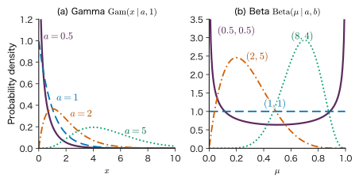
Example 3.8: Summary of the gamma and beta distributions
(1) Find the mean, variance, and mode of $\mathrm{Gam}(x\mid3,\,0.5)$. (2) Find the normalization constant, mean, variance, and mode of $\mathrm{Beta}(\mu\mid2,5)$.
Solution. (1) The mean is $a/b=3/0.5=6$, the variance is $a/b^{2}=3/0.25=12$ (standard deviation 3.46), and the mode is $(a-1)/b=2/0.5=4$. The mode 4 < the mean 6, so the distribution has a tail extending to the right.
(2) $B(2,5)=\dfrac{\Gamma(2)\Gamma(5)}{\Gamma(7)}=\dfrac{1!\,4!}{6!}=\dfrac{24}{720}=\dfrac{1}{30}$, so the density is $30\,\mu(1-\mu)^{4}$. The mean is $2/7\approx0.286$, the variance is $\dfrac{2\times5}{7^{2}\times8}=\dfrac{10}{392}\approx0.0255$ (standard deviation 0.160), and the mode is $\dfrac{2-1}{2+5-2}=0.2$. If you set the distribution to “Beta distribution” in Simulator 3.1, these values appear in the readout with the default $a=2$, $b=5$ (on the screen the variable $\mu$ is written as $x$).
3.9 Student's t Distribution — Adjusting the Heaviness of the TailsDetailed Route
3.9.1 Mixing the variance of a Gaussian distribution
Most measured values follow a Gaussian distribution, but now and then a value far from the rest is mixed in. We express this by thinking that “the spread differs from one measurement to the next.” Introduce a positive variable $\eta$ representing the precision (the inverse of the variance) of each measurement, and let
$$ x\mid\eta\ \sim\ \Normal\!\left(x\,\middle|\,\mu,\ \frac{s^{2}}{\eta}\right), $$ $$ \eta\ \sim\ \mathrm{Gam}\!\left(\eta\,\middle|\,\frac{\nu}{2},\frac{\nu}{2}\right) $$Here $s\gt0$ is the scale, and $\nu\gt0$ is a shape parameter called the degrees of freedom. The mean of $\eta$ is $(\nu/2)/(\nu/2)=1$, so on average this is a Gaussian distribution with variance $s^{2}$; but in a measurement with small $\eta$ (rare, but it happens now and then) the variance becomes large and an outlier appears. The smaller $\nu$ is, the larger the spread of $\eta$ (its variance is $2/\nu$). Eliminating $\eta$ by integration gives the distribution of $x$.
Derivation: A mixture of a Gaussian distribution and a gamma distribution
Write $\Delta^{2}=(x-\mu)^{2}/s^{2}$. By marginalization (Chapter 2, Section 2.6),
$$ \begin{aligned} p(x)=\int_0^\infty&\sqrt{\frac{\eta}{2\pi s^{2}}}\,e^{-\eta\Delta^{2}/2}\\ &\times\frac{(\nu/2)^{\nu/2}}{\Gamma(\nu/2)}\,\eta^{\nu/2-1}e^{-\nu\eta/2}\,\dd\eta . \end{aligned} $$Pull out the constants that do not depend on $\eta$, and combine the powers and the exponentials of $\eta$. Since $\eta^{1/2}\cdot\eta^{\nu/2-1}=\eta^{(\nu+1)/2-1}$ and $e^{-\eta\Delta^{2}/2}e^{-\nu\eta/2}=e^{-\eta(\nu+\Delta^{2})/2}$, we have
$$ \begin{aligned} p(x)=&\frac{(\nu/2)^{\nu/2}}{\Gamma(\nu/2)\sqrt{2\pi}\,s}\\ &\times\int_0^\infty\eta^{(\nu+1)/2-1}e^{-\eta(\nu+\Delta^{2})/2}\,\dd\eta . \end{aligned} $$The remaining integral is the normalization of the gamma distribution (Section 3.8.2) with $a=(\nu+1)/2$ and $b=(\nu+\Delta^{2})/2$, and it equals $\Gamma\bigl(\tfrac{\nu+1}{2}\bigr)\big/\bigl(\tfrac{\nu+\Delta^{2}}{2}\bigr)^{(\nu+1)/2}$. Writing $\tfrac{\nu+\Delta^{2}}{2}=\tfrac{\nu}{2}\bigl(1+\tfrac{\Delta^{2}}{\nu}\bigr)$, we get
$$ \begin{aligned} &\frac{(\nu/2)^{\nu/2}}{\bigl(\frac{\nu}{2}\bigr)^{(\nu+1)/2}\bigl(1+\frac{\Delta^{2}}{\nu}\bigr)^{(\nu+1)/2}}\\ &=\sqrt{\frac{2}{\nu}}\left(1+\frac{\Delta^{2}}{\nu}\right)^{-(\nu+1)/2} . \end{aligned} $$Since $\sqrt{2/\nu}/\sqrt{2\pi}=1/\sqrt{\nu\pi}$, we obtain the following Eq. \eqref{eq:3-t}.
∎
Definition 3.12: Student's t distribution
For $x\in\R$, location $\mu\in\R$, scale $s\gt0$, and degrees of freedom $\nu\gt0$, the following Eq. \eqref{eq:3-t} is called the Student's t distribution.
This is the same expression (in the form with the constants omitted) that we used in Chapter 4, Section 4.9, as a likelihood that is robust to outliers. The “Student's t distribution” in Simulator 3.1 is also displayed in terms of the location $\mu$, the scale $s$, and the degrees of freedom $\nu$.
3.9.2 Connecting the Cauchy distribution and the Gaussian distribution
- $\nu=1$: Since $\Gamma(1)=1$ and $\Gamma(1/2)=\sqrt\pi$, the constant is $1/(\pi s)$, and the expression is $\dfrac{1}{\pi s}\Bigl[1+\dfrac{(x-\mu)^{2}}{s^{2}}\Bigr]^{-1}=\dfrac{1}{\pi}\dfrac{s}{(x-\mu)^{2}+s^{2}}$. This is the Cauchy distribution with $x_0=\mu$ and $\gamma=s$.
- $\nu\to\infty$: $\bigl(1+u/\nu\bigr)^{-(\nu+1)/2}\to e^{-u/2}$ (with $u=(x-\mu)^{2}/s^{2}$; the definition of the exponential function). The normalization constant approaches $1/(\sqrt{2\pi}s)$ (from the Stirling approximation applied to the ratio of gamma functions). Hence it becomes the Gaussian distribution $\Normal(\mu,s^{2})$. This corresponds to the variance $2/\nu$ of $\eta$ going to 0, so that the precision is fixed at 1.
The tails decrease as a power law: when $\abs{x}$ is large, $[\,\cdot\,]^{-(\nu+1)/2}\sim\abs{x}^{-(\nu+1)}$ (Figure 3.10). From the rule of thumb after Definition 3.1, $\Ex[\abs{x}^{k}]$ is finite only when $k\lt\nu$.
Theorem 3.6: Conditions for the existence of the mean and variance of the t distribution
For $x\sim\mathrm{St}(x\mid\mu,s^{2},\nu)$, the mean exists only when $\nu\gt1$, and then $\Ex[x]=\mu$. The variance is finite only when $\nu\gt2$, and then $\Var[x]=s^{2}\dfrac{\nu}{\nu-2}$. For $1\lt\nu\le2$ the mean exists but the variance diverges.
Derivation: Finding the variance from the mixture representation
Given $\eta$, the conditional mean and variance are $\Ex[x\mid\eta]=\mu$ and $\Var[x\mid\eta]=s^{2}/\eta$. Since the conditional mean is a constant that does not depend on $\eta$, the overall variance is the mean of the conditional variance ($\Var[x]=\Ex[(x-\mu)^{2}]=\Ex_{\eta}\bigl[\Ex[(x-\mu)^{2}\mid\eta]\bigr]$).
$$ \Var[x]=s^{2}\,\Ex\!\left[\frac{1}{\eta}\right]. $$For $\eta\sim\mathrm{Gam}(a,b)$, substituting $r=-1$ into $\Ex[\eta^{r}]=\Gamma(a+r)/(\Gamma(a)b^{r})$ from Section 3.8.2 gives (this requires $a\gt1$)
$$ \Ex\!\left[\frac1\eta\right]=\frac{\Gamma(a-1)\,b}{\Gamma(a)}=\frac{b}{a-1}. $$Substituting $a=b=\nu/2$ gives $\Ex[1/\eta]=\dfrac{\nu/2}{\nu/2-1}=\dfrac{\nu}{\nu-2}$ (for $\nu\gt2$). For $\nu\le2$, the integral $\int_0\eta^{-1}\eta^{\nu/2-1}\,\dd\eta$ diverges as $\eta\to0$. In other words, measurements whose precision is nearly 0 (enormous outliers) are mixed in “frequently enough,” so the variance becomes infinite.
∎
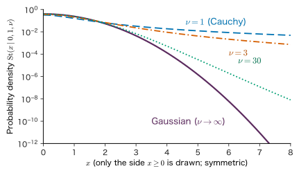
Example 3.9: The t distribution with 3 degrees of freedom
For $\mathrm{St}(x\mid0,1,3)$, find (1) the normalization constant, (2) the variance, and (3) the probability that $\abs{x}\gt3$. For (3), do not use the cumulative distribution function; use the substitution $x=\sqrt3\tan\theta$.
Solution. (1) Since $\Gamma(2)=1$ and $\Gamma(3/2)=\tfrac12\sqrt\pi$,
$$ \begin{aligned} \frac{\Gamma(2)}{\Gamma(3/2)\sqrt{3\pi}}&=\frac{1}{\frac12\sqrt\pi\cdot\sqrt{3\pi}}\\ &=\frac{2}{\pi\sqrt3}\approx0.3676, \end{aligned} $$ $$ p(x)=\frac{2}{\pi\sqrt3}\left(1+\frac{x^{2}}{3}\right)^{-2}. $$(2) By Theorem 3.6, $\Var[x]=1\times3/(3-2)=3$.
(3) Putting $x=\sqrt3\tan\theta$, we have $\dd x=\sqrt3\sec^{2}\theta\,\dd\theta$ and $1+x^{2}/3=\sec^{2}\theta$, so
$$ \begin{aligned} \int p(x)\,\dd x&=\frac{2}{\pi\sqrt3}\int\cos^{4}\theta\cdot\sqrt3\sec^{2}\theta\,\dd\theta\\ &=\frac{2}{\pi}\int\cos^{2}\theta\,\dd\theta\\ &=\frac{1}{\pi}\left(\theta+\tfrac12\sin2\theta\right)+C . \end{aligned} $$As $x$ runs from $0$ to $3$, $\theta$ runs from $0$ to $\arctan\sqrt3=\pi/3$, so $P(0\le x\le3)=\dfrac1\pi\left(\dfrac\pi3+\dfrac12\cdot\dfrac{\sqrt3}{2}\right)$ $=\dfrac13+\dfrac{\sqrt3}{4\pi}\approx0.4712$. By symmetry, $P(\abs{x}\gt3)=1-2\times0.4712\approx0.0577$. For a Gaussian distribution with the same variance 3, the probability of $\abs{x}\gt3$ (exceeding $\sqrt3\,\sigma$) is about 0.083, so in this comparison the t distribution gives the smaller value. However, compared with the probability 0.0027 of $\abs{x}\gt3$ for a Gaussian distribution with variance 1, it is about 21 times larger, which shows the character of the t distribution: “close to a Gaussian in the center, with heavy tails.” In the “t (ν) and Gaussian” panel of Simulator 3.1 as well, you can confirm $P(\abs{x}\gt3)=0.0577$ for $\nu=3$.
3.10 The Dirichlet and Weibull DistributionsDetailed Route
3.10.1 The Dirichlet distribution: a distribution on vectors of proportions
The parameter $\bm{\mu}=(\mu_1,\dots,\mu_K)^{\tp}$ of the categorical distribution in Section 3.3 is a “vector of proportions” satisfying $\mu_k\ge0$ and $\sum_k\mu_k=1$. For example, the composition $(x_{\mathrm A},x_{\mathrm B},x_{\mathrm C})$ of a three-component system has this form as well. The set of such points (for $K=3$, the surface of an equilateral triangle) is called a simplex. The most basic distribution on a simplex is the Dirichlet distribution, which extends the beta distribution to $K$ components.
Definition 3.13: Dirichlet distribution
For parameters $\bm{\alpha}=(\alpha_1,\dots,\alpha_K)^{\tp}$ with $\alpha_k\gt0$ and $\alpha_0=\sum_k\alpha_k$, the density on the simplex
\begin{equation} \begin{aligned}&\mathrm{Dir}(\bm{\mu}\mid\bm{\alpha})\\&=\frac{\Gamma(\alpha_0)}{\Gamma(\alpha_1)\cdots\Gamma(\alpha_K)}\\&\quad\times\prod_{k=1}^{K}\mu_k^{\alpha_k-1}\end{aligned} \label{eq:3-dir} \end{equation}is called the Dirichlet distribution. For $K=2$, with $\mu_1=\mu$ and $\mu_2=1-\mu$, it coincides with $\mathrm{Beta}(\mu\mid\alpha_1,\alpha_2)$. The $\alpha_k$ here are symbols used only in this section (they are unrelated to the dual variables of Chapter 11).
The mean and variance are obtained by the same calculation as for the beta distribution (the integral again becomes a normalization constant of the same form).
$$ \Ex[\mu_k]=\frac{\alpha_k}{\alpha_0},\qquad \Var[\mu_k]=\frac{\alpha_k(\alpha_0-\alpha_k)}{\alpha_0^{2}(\alpha_0+1)}, $$ $$ \Cov[\mu_j,\mu_k]=-\frac{\alpha_j\alpha_k}{\alpha_0^{2}(\alpha_0+1)}\quad(j\ne k). $$The larger $\alpha_0$ is, the more the distribution concentrates around the mean. The covariance is negative because the sum is fixed at 1. The relation between the gamma and beta distributions in Section 3.8.1 extends directly: if we draw $g_k\sim\mathrm{Gam}(\alpha_k,1)$ independently and set $\mu_k=g_k/\sum_jg_j$, then $\bm{\mu}\sim\mathrm{Dir}(\bm{\alpha})$ (this is how random numbers from a Dirichlet distribution are generated). Just as the beta distribution is the conjugate prior of the Bernoulli distribution, the Dirichlet distribution is the conjugate prior of the categorical and multinomial distributions (Section 3.11). In the mixture distributions of Chapter 17, it appears as the prior distribution of the mixing coefficients $\pi_k$.
Example 3.10: Uncertainty in phase fractions (Dirichlet distribution)
Suppose the fractions $\bm{\mu}$ of the three phases in Example 3.3 follow a Dirichlet distribution with $\bm{\alpha}=(6,3,1)^{\tp}$. Find the mean and standard deviation of each component.
Solution. $\alpha_0=10$. The mean is $(6,3,1)/10=(0.6,0.3,0.1)$. From the variance $\dfrac{\alpha_k(10-\alpha_k)}{100\times11}$ we get $\dfrac{24}{1100}=0.0218$, $\dfrac{21}{1100}=0.0191$, $\dfrac{9}{1100}=0.0082$, and the standard deviations are 0.148, 0.138, 0.090. Because $\alpha_0$ is small, the fractions carry considerable uncertainty.
3.10.2 The Weibull distribution: from the idea of the weakest link
A brittle material such as ceramics or glass fails from the single most dangerous one among the countless tiny defects (cracks, pores, inclusions) inside and on its surface. Just as the strength of a chain is determined by its weakest ring, this is called the weakest link idea. From this idea we derive the distribution of fracture strength. To avoid confusion with $\sigma$ for the standard deviation, we write the strength as $s$ (in units of MPa). (It is a different quantity from the scale $s$ of the t distribution in Section 3.9.)
Derivation: From the weakest link to the Weibull distribution
Divide a sample of volume $V$ into $n=V/\Delta V$ small elements of volume $\Delta V$. Suppose that under stress $s$ the probability that each element fails is small and proportional to $\Delta V$, so that it can be written $\phi(s)\Delta V$ ($\phi(s)$ is the “fragility per unit volume” and is an increasing function of $s$). Suppose also that the elements fail independently of one another.
The sample survives exactly when all the elements survive (weakest link). By independence, the survival probability is a product:
$$ P_{\mathrm{s}}(s)=\bigl(1-\phi(s)\Delta V\bigr)^{V/\Delta V} . $$Letting $\Delta V\to0$, the same limit as in Section 3.4.1, $\lim_{n\to\infty}(1-c/n)^{n}=e^{-c}$ (with $c=V\phi(s)$), gives
$$ P_{\mathrm{s}}(s)=\exp\bigl[-V\phi(s)\bigr], $$ $$ F(s)=1-P_{\mathrm{s}}(s)=1-\exp\bigl[-V\phi(s)\bigr] . $$$F(s)$ is the “probability of failing by stress $s$”; that is, the cumulative distribution function of the strength. Weibull (1951) chose for $\phi(s)$ the power function $\phi(s)=\dfrac{1}{V_0}\left(\dfrac{s}{s_0}\right)^{m}$, using a baseline volume $V_0$ and a scale $s_0$. Substituting this gives the following Eq. \eqref{eq:3-weibull}.
∎
For a sample with $V=V_0$, $F(s)=1-\exp[-(s/s_0)^{m}]$ is called the Weibull distribution, $m\gt0$ is called the Weibull modulus, and $s_0$ is called the scale (characteristic strength). Differentiating $F$ gives the density
$$ p(s)=\frac{m}{s_0}\left(\frac{s}{s_0}\right)^{m-1}\exp\!\left[-\left(\frac{s}{s_0}\right)^{m}\right], $$ $$ \begin{aligned} \Ex[s]&=s_0\,\Gamma\!\left(1+\frac1m\right),\\ \Var[s]&=s_0^{2}\left[\Gamma\!\left(1+\frac2m\right)-\Gamma\!\left(1+\frac1m\right)^{2}\right]. \end{aligned} $$(For the mean, put $t=(s/s_0)^{m}$; then $s=s_0t^{1/m}$ and $p(s)\,\dd s=e^{-t}\,\dd t$, so $\Ex[s]=s_0\int_0^\infty t^{1/m}e^{-t}\,\dd t=s_0\Gamma(1+1/m)$. The variance is similar.) The meaning of each parameter is as follows.
- $F(s_0)=1-e^{-1}\approx0.632$. $s_0$ is “the strength at which 63.2 % of the samples fail.”
- $m$ expresses how uniform the strengths are. The coefficient of variation (standard deviation / mean) is 0.229, 0.120, 0.062 for $m=5,10,20$, roughly $1.2/m$. For $m=1$ the distribution is the exponential distribution.
- Eq. \eqref{eq:3-weibull} contains the volume $V$. The strength giving the same failure probability satisfies the condition that $V s^{m}$ is constant, so $s\propto V^{-1/m}$, and larger components are weaker (size effect). For $m=10$, a 1000-fold volume reduces the strength to $1000^{-1/10}\approx0.50$ times. This is why the strength of a small test specimen cannot be used as it is in the design of a large part.
3.10.3 The Weibull plot
Rearranging Eq. \eqref{eq:3-weibull} (with $V=V_0$), taking the logarithm of $1-F=\exp[-(s/s_0)^{m}]$ twice gives
\begin{equation} \begin{aligned}&\ln\ln\frac{1}{1-F(s)}\\&=m\ln s-m\ln s_0\end{aligned} \label{eq:3-weibull-plot} \end{equation}Taking $\ln s$ on the horizontal axis and $\ln\ln\bigl(1/(1-F)\bigr)$ on the vertical axis, the Weibull distribution becomes a straight line of slope $m$, and the point where the vertical axis is 0 is $s=s_0$. This is called the Weibull plot. Arrange the strengths of $n$ test specimens in increasing order $s_{(1)}\le\dots\le s_{(n)}$, and estimate $F$ at the $i$th point as $F_i=(i-0.5)/n$ (there are other ways of estimating it, such as $i/(n+1)$). If the points lie along a straight line, the Weibull distribution fits well, and if we draw the line by least squares, $m$ is obtained from the slope (Figure 3.11, Exercise 3.7).
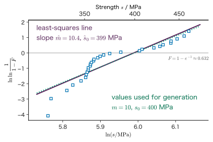
Example 3.11: Weibull modulus and the size effect
Suppose the bending strength of a certain ceramic follows a Weibull distribution with $m=10$ and $s_0=400\ \mathrm{MPa}$ for a specimen of volume $V_0$ (a setting for teaching purposes). Find (1) the fraction of specimens that fail at $350\ \mathrm{MPa}$, (2) the mean strength and the median, and (3) the characteristic strength (the strength at which 63.2 % fail) of a component of volume $10V_0$, and the fraction that fail at $350\ \mathrm{MPa}$. You may use $\Gamma(1.1)=0.9514$.
Solution. (1) $(350/400)^{10}=0.875^{10}=0.2631$, so $F(350)=1-e^{-0.2631}$ $=1-0.7687=0.231$. About 23 % fail.
(2) The mean is $s_0\Gamma(1+1/10)$ $=400\times0.9514=380.5\ \mathrm{MPa}$. For the median, $F=1/2$ gives $(s/s_0)^{m}=\ln2$, so $s=400\times(\ln2)^{1/10}$ $=400\times0.9640=385.6\ \mathrm{MPa}$.
(3) In Eq. \eqref{eq:3-weibull}, $V/V_0=10$. The strength at which the exponent equals 1 satisfies $10(s/400)^{10}=1$, so $s=400\times10^{-1/10}=317.7\ \mathrm{MPa}$. At $350\ \mathrm{MPa}$, $F=1-\exp(-10\times0.2631)$ $=1-e^{-2.631}=0.928$, so even under the same stress more than 90 % fail.
3.11 The Exponential Family and an Introduction to Conjugate PriorsDetailed Route
Many of the distributions in this chapter, although they look different, can be written in a common form.
Definition 3.14: Exponential family
A distribution with parameter (natural parameter) $\bm{\eta}\in\R^{L}$ is said to belong to the exponential family if it can be written in the form
\begin{equation} \begin{aligned}&p(x\mid\bm{\eta})\\&=h(x)\,g(\bm{\eta})\exp\!\left(\bm{\eta}^{\tp}\bm{u}(x)\right)\end{aligned} \label{eq:3-expfam} \end{equation}Here $\bm{u}(x)\in\R^{L}$ is a function of the data, $h(x)$ is a function that does not depend on $\bm{\eta}$, and $g(\bm{\eta})$ is a coefficient for normalization.
We give three examples.
- Bernoulli distribution: $\mu^{x}(1-\mu)^{1-x}=(1-\mu)\exp\!\left(x\ln\dfrac{\mu}{1-\mu}\right)$. Hence $\eta=\ln\dfrac{\mu}{1-\mu}$, $u(x)=x$, $h(x)=1$, $g(\eta)=1-\mu$. Solving for $\mu$ in terms of $\eta$ gives $\mu=\dfrac{1}{1+e^{-\eta}}$, which is the sigmoid function $\sigma(\eta)$ (the $\sigma$ here is not the standard deviation). The logistic regression of Chapter 9 is a model in which this $\eta$ is expressed as a linear function of the input.
- Poisson distribution: $\dfrac{\lambda^{m}e^{-\lambda}}{m!}=\dfrac{1}{m!}e^{-\lambda}\exp(m\ln\lambda)$. Hence $\eta=\ln\lambda$, $u(m)=m$, $h(m)=1/m!$, $g(\eta)=\exp(-e^{\eta})$.
- Gaussian distribution: Expanding the exponent gives $-\dfrac{(x-\mu)^{2}}{2\sigma^{2}}=\dfrac{\mu}{\sigma^{2}}x-\dfrac{1}{2\sigma^{2}}x^{2}-\dfrac{\mu^{2}}{2\sigma^{2}}$, so $\bm{\eta}=\left(\dfrac{\mu}{\sigma^{2}},\,-\dfrac{1}{2\sigma^{2}}\right)^{\tp}$, $\bm{u}(x)=(x,\,x^{2})^{\tp}$, $h(x)=1$, $g(\bm{\eta})=\dfrac{1}{\sqrt{2\pi\sigma^{2}}}\exp\!\left(-\dfrac{\mu^{2}}{2\sigma^{2}}\right)$ ($\mu,\sigma^{2}$ can be rewritten in terms of $\bm{\eta}$).
The Cauchy distribution and the t distribution (even with the degrees of freedom fixed) cannot be written in this form.
An important property of the exponential family is that the likelihood of $N$ i.i.d. data points is
$$ \begin{aligned} p(\data\mid\bm{\eta})=&\left(\prod_{n=1}^{N}h(x_n)\right)\\ &\times g(\bm{\eta})^{N}\exp\!\left(\bm{\eta}^{\tp}\sum_{n=1}^{N}\bm{u}(x_n)\right) \end{aligned} $$so that the part involving $\bm{\eta}$ depends on the data only through the sum $\sum_n\bm{u}(x_n)$. This sum is called the sufficient statistic. For the Gaussian distribution, knowing $\sum_nx_n$ and $\sum_nx_n^{2}$, and for the Bernoulli distribution, knowing the number of successes $\sum_nx_n$, is enough: the order in which the data appear is not needed for estimation.
Furthermore, if we choose the prior distribution to have the same form as the likelihood,
$$ p(\bm{\eta}\mid\bm{\chi},\nu_0)\propto g(\bm{\eta})^{\nu_0}\exp\!\left(\nu_0\,\bm{\eta}^{\tp}\bm{\chi}\right) $$then the product with the likelihood becomes $g(\bm{\eta})^{\nu_0+N}\exp\!\bigl(\bm{\eta}^{\tp}(\nu_0\bm{\chi}+\sum_n\bm{u}(x_n))\bigr)$, and the posterior distribution also takes the same form. We can read $\nu_0$ as “how many virtual data points the prior distribution is worth” and $\bm{\chi}$ as “the mean of $\bm{u}$ over those virtual data points.” Such a prior distribution is called a conjugate prior. Specific pairs are collected in Table 3.1. The estimation computations that use them are carried out in the next chapter, Chapter 4.
| Distribution of the data (likelihood) | Parameter to estimate | Conjugate prior | Where treated in this book |
|---|---|---|---|
| Bernoulli, binomial | Success probability $\mu$ | Beta | Chapter 4, Section 4.4 |
| Categorical, multinomial | Probability vector $\bm{\mu}$ | Dirichlet | Chapter 17 (mixing coefficients) |
| Poisson | Rate $\lambda$ | Gamma | Chapter 4, Exercise 4.3 |
| Gaussian (variance known) | Mean $\mu$ | Gaussian | Chapter 4, Section 4.6 |
| Gaussian (mean known) | Precision $1/\sigma^{2}$ | Gamma | Section 3.9 (mixture of t distributions) |
Example 3.12: Sufficient statistics of the Gaussian distribution
The lattice constant of a sample was measured four times, giving $2.0,\ 2.4,\ 1.8,\ 2.2$ (deviations from a baseline value, in units of $10^{-3}\ \text{Å}$) (a numerical example for teaching purposes). Write the likelihood $\prod_n\Normal(x_n\mid\mu,\sigma^{2})$ of the Gaussian distribution using only the sufficient statistics $T_1=\sum_nx_n$ and $T_2=\sum_nx_n^{2}$. Also find the values of $T_1$ and $T_2$.
Solution. Expanding the square and summing gives
$$ \begin{aligned} \sum_n(x_n-\mu)^{2}&=\sum_nx_n^{2}-2\mu\sum_nx_n+N\mu^{2}\\ &=T_2-2\mu T_1+N\mu^{2} \end{aligned} $$so that
$$ \begin{aligned} &\prod_{n=1}^{N}\Normal(x_n\mid\mu,\sigma^{2})\\ &=(2\pi\sigma^{2})^{-N/2}\exp\!\left[-\frac{T_2-2\mu T_1+N\mu^{2}}{2\sigma^{2}}\right]. \end{aligned} $$We have $N=4$, $T_1=2.0+2.4+1.8+2.2=8.4$, and $T_2=4.00+5.76+3.24+4.84=17.84$. To compute the likelihood, these two numbers and $N$ are sufficient.
3.12 Connections to Materials Engineering and Condensed Matter Physics — Counting Statistics, Spectral Line Shapes, and Fracture StrengthDetailed Route
3.12.1 XRD and XPS counts and the Poisson distribution
In X-ray diffraction (XRD), the detector counts the diffracted X-ray photons one by one, and in X-ray photoelectron spectroscopy (XPS), it counts the electrons ejected from the sample one by one. Each individual detection is rare and independent of the others, so the number of counts in a fixed time can be regarded as following a Poisson distribution (Section 3.4). This leads to the following conclusions in measurement practice.
- The error bar is $\sqrt{m}$: The standard deviation of a count $m$ can be estimated as $\sqrt{m}$. The size of the error bar differs from point to point in a spectrum; the higher the intensity at the top of a peak, the larger the absolute error and the smaller the relative error.
- Variances add under subtraction: If the net intensity of a peak is found as “count at the peak position $m_{\mathrm p}$ − background count $m_{\mathrm b}$,” the two are independent, so $\Var[m_{\mathrm p}-m_{\mathrm b}]$ $=\Var[m_{\mathrm p}]+\Var[m_{\mathrm b}]$ $\approx m_{\mathrm p}+m_{\mathrm b}$. Although the difference becomes smaller, the variance becomes larger by addition.
- Weights in fitting: When fitting a peak by least squares, weight each point by the reciprocal of its variance $m_i$ (Chapter 8). Where the counts are fewer than about 10, the Gaussian approximation becomes poor, so it is better to use the Poisson likelihood as it is.
Example 3.13: Uncertainty of the net intensity of a peak
At the position of an XRD peak, 400 counts were obtained, and at the background just beside it, 100 counts in the same time. Find the net intensity and its standard deviation and relative error. Also, by what factor should the measurement time be multiplied to reduce the relative error to 1/3?
Solution. The net intensity is $400-100=300$ counts. The variance is $400+100=500$, and the standard deviation is $\sqrt{500}\approx22.4$ counts. The relative error is $22.4/300\approx7.5\ \%$. If the measurement time is multiplied by $k$, the net intensity becomes $300k$ and the standard deviation $\sqrt{500k}$, so the relative error is multiplied by $1/\sqrt{k}$. To reduce it to 1/3 we need $k=9$. The relative error $\sqrt{400}/400=5\ \%$ estimated from the 400 counts alone, without subtracting the background, underestimates the uncertainty.
3.12.2 Spectral line shapes — what happens if Gaussian and Lorentzian are confused
The shape of a spectroscopic peak (line shape) is determined by the cause of the broadening (the derivation of the line shape for each cause is collected in Chapter 3 of Reference 5).
- Lorentzian: Broadening due to the finite lifetime $\tau$ of the excited state (the natural width; the full width at half maximum is $1/\tau$ in angular frequency and $\hbar/\tau$ in energy; the $\gamma$ of Section 3.7.1 corresponds to $1/(2\tau)$), and broadening due to collisions of atoms and molecules in a gas. It has the same form as the Cauchy distribution of Section 3.7, with heavy tails.
- Gaussian: Broadening due to the sum of many small independent factors. Examples are Doppler broadening due to the thermal motion of atoms in a gas (because in the Maxwell distribution the velocity component along the line of sight follows a Gaussian distribution), the resolution of the instrument (when the instrument function can be approximated as Gaussian), and the variation of the local environment within the sample.
- Voigt profile: The case where both causes are present. The shift of the observed peak position is the independent sum of a Lorentzian shift and a Gaussian shift, so its distribution is the convolution of the two densities (Section 3.5.4: the characteristic function of an independent sum is the product, here $\exp(-\gamma\abs{k}-\sigma^{2}k^{2}/2)$). This is called the Voigt profile. The convolution integral of the Voigt profile cannot be written in elementary functions, so it is sometimes replaced by the pseudo-Voigt function, a weighted sum of a Gaussian and a Lorentzian. Reference 7 shows that powder XRD peak shapes are well represented by the pseudo-Voigt function. The full width at half maximum $f_{\mathrm V}$ of the Voigt profile can be estimated from the full width at half maximum $f_{\mathrm G}$ of the Gaussian and $f_{\mathrm L}$ of the Lorentzian by the approximate formula $f_{\mathrm V}\approx0.5346f_{\mathrm L}$ $+\sqrt{0.2166f_{\mathrm L}^{2}+f_{\mathrm G}^{2}}$ (error of about 0.02 %; Reference 6). For the Voigt profile of Figure 3.12 ($f_{\mathrm G}=2.355$, $f_{\mathrm L}=2$), the numerically obtained value is 3.601, and the approximate formula also gives 3.601.
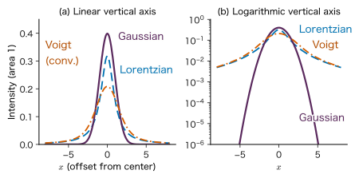
What happens if a truly Lorentzian peak is fitted with a Gaussian? Even if the peak height and the full width at half maximum are matched, the area (integrated intensity) of the Gaussian is only $\sqrt{2\pi}\,\sigma h$ ($\sigma=\gamma/\sqrt{2\ln2}$, $h$ the height), compared with $\pi\gamma h$ for the Lorentzian, and the ratio is $\sqrt{\pi/\ln2}/\pi\approx0.678$. That is, the integrated intensity is underestimated by about 32 %. The missing intensity lies in the tails: for the Lorentzian, 20.5 % of the area lies outside $\pm3\gamma$ from the center, whereas the Gaussian fit accounts for only 0.04 % there (Exercise 3.8). In quantitative analysis that uses the integrated intensity, and in the separation of closely spaced peaks, this difference affects the result.
3.12.3 Weibull statistics of fracture strength
The weakest-link idea of Section 3.10.2 has become a standard tool for treating the variability of the strength of brittle materials. In practice, the bending strength of a dozen to several dozen test specimens made under the same conditions is measured, and $m$ and $s_0$ are obtained from the Weibull plot (Figure 3.11). Knowing the type of the distribution here is useful in the following ways.
- Allowable stress in design: A requirement such as “we want the fracture probability to be $10^{-4}$ or less” is a statement about the tail of the distribution. If it is estimated with a Gaussian distribution using mean strength ± standard deviation, the result can be far off because the shape of the tail is different. Solving Eq. \eqref{eq:3-weibull} for $F=10^{-4}$ gives $s=s_0[-\ln(1-10^{-4})]^{1/m}\approx s_0\,(10^{-4})^{1/m}$. However, this is an extrapolation far beyond the range of the dozen or so specimens measured, and the uncertainty in the estimate of $m$ strongly affects the result (Chapter 4 treats the uncertainty of estimation).
- Size effect: When $s_0$ obtained with small test specimens is used for a large component, correct it by $s\propto V^{-1/m}$ (Example 3.11).
- When the points do not lie on a straight line: Defects of different kinds, such as surface flaws and internal pores, may be mixed. Observe the fracture surface and consider the defects separately by kind.
3.13 Common Misconceptions and Limits of ApplicabilityDetailed Route
Caution: Do not assume a Gaussian distribution for everything
The Gaussian distribution is a convenient distribution supported by the central limit theorem, but its premise is “a sum of many independent factors with finite variance.” If we fit a Gaussian distribution to (a) quantities that cannot be negative (counts, intensities, particle sizes), (b) quantities with upper and lower limits (proportions, relative density), or (c) quantities that occasionally deviate greatly (heavy-tailed distributions), we assign probability to negative intensities and to relative densities above 100 %, and we underestimate how likely outliers are by many orders of magnitude. Choose a distribution only after checks such as drawing a histogram, plotting the vertical axis on a logarithmic scale to look at the tails, and examining the distribution of the residuals. Least squares is tied to the assumption of Gaussian noise (Chapter 8), so this caution applies equally to regression.
Caution: For some distributions, “mean ± standard deviation” is meaningless
For the Cauchy distribution and for the t distribution with 2 or fewer degrees of freedom, the mean and variance do not exist. The sample mean and sample standard deviation of data drawn from such a distribution come out as some number when we compute them, but they do not settle down even when we increase the number of samples (Simulator 3.2). Moreover, even when the mean and variance exist, for asymmetric distributions such as a strength with a small Weibull modulus or a particle size with a long right tail, the interval “mean ± standard deviation” conveys almost no information about probability. In that case, report the median and the quartiles (or the 2.5 % and 97.5 % points).
Caution: Check the conditions under which the Poisson distribution applies
“It is a count, so it is Poisson” is not necessarily true. The premise of the Poisson distribution is that events occur independently and at a constant rate. (a) A detector has a dead time during which it cannot count the next event for a while right after counting one; when the count rate is high, counts are missed and the variance becomes smaller than the mean. (b) If there are fluctuations in the source intensity, displacement of the sample position, or a small number of grains contributing to diffraction in a coarse-grained powder (particle statistics), the variance becomes larger than the mean (overdispersion). It is good to check by comparing the variance and the mean of repeated measurements (Example 3.14). Also, the binomial distribution may be approximated by the Poisson distribution when $\mu$ is small, and as in Example 3.4, a difference of a few percent remains even for $\mu=0.08$.
Example 3.14: Spotting overdispersion
The intensity of a diffraction peak was measured 10 times while repacking the sample each time, and the sample mean of the counts was 50 and the unbiased variance was 120 (a numerical example for teaching purposes). (1) If the Poisson distribution holds, about what should the variance be? (2) When the Poisson distribution holds, $D=(n-1)s^{2}/\bar{m}$ ($n$ is the number of measurements, $s^{2}$ is the unbiased variance, and $\bar m$ is the sample mean) approximately follows a $\chi^{2}$ distribution with $n-1$ degrees of freedom. Compute $D$, and judge using the fact that the probability of a value at least $D$ under the $\chi^{2}$ distribution with 9 degrees of freedom is about 0.010. (3) What happens if we use $\sqrt{50}$ as the uncertainty of a single measurement?
Solution. (1) For the Poisson distribution, variance = mean, so the variance should be about 50.
(2) $D=9\times120/50=21.6$. If the Poisson distribution were correct, the probability of obtaining 21.6 or more is only about 1 %, so it is natural to conclude that there is variability (overdispersion) that the Poisson distribution alone cannot explain. The shifts caused by repacking the sample are considered to be added on top.
(3) $\sqrt{50}\approx7.1$ is 0.65 times the actual spread $\sqrt{120}\approx11.0$, so it underestimates the uncertainty.
3.14 Summary, Link to the Next Chapter, Exercises, and References
3.14.1 Summary
- Reading a distribution: check, in order, the domain, the parameters, the normalization, and the mean and variance (and the conditions for their existence). Even when there is no mean or variance, the median, the quartiles, and the full width at half maximum can be used.
- Discrete distributions: Bernoulli → binomial, categorical → multinomial. The limit of the binomial distribution as $N\to\infty$ with $N\mu=\lambda$ held fixed is the Poisson distribution, and the relative error of a count is $1/\sqrt{\lambda}$.
- Gaussian distribution: a sum of independent Gaussian variables is also Gaussian. In the multivariate case the surfaces of equal probability are ellipsoids, and the marginal and conditional distributions are also Gaussian (the conditional mean is a linear function).
- Heavy-tailed distributions: the Cauchy distribution has neither a mean nor a variance, and its sample mean does not settle down. The t distribution adjusts the heaviness of its tails through $\nu$.
- Positive quantities, proportions, and strengths: gamma, beta, Dirichlet, and Weibull (weakest link). The exponential family has conjugate priors. See Table 3.2 for a list.
| Distribution | Domain | Parameters | Mean | Variance |
|---|---|---|---|---|
| Bernoulli | $\{0,1\}$ | $\mu\in[0,1]$ | $\mu$ | $\mu(1-\mu)$ |
| Binomial | $\{0,\dots,N\}$ | $N$, $\mu$ | $N\mu$ | $N\mu(1-\mu)$ |
| Multinomial (component $k$) | $\sum_km_k=N$ | $N$, $\bm{\mu}$ | $N\mu_k$ | $N\mu_k(1-\mu_k)$ |
| Poisson | $\{0,1,2,\dots\}$ | $\lambda\gt0$ | $\lambda$ | $\lambda$ |
| Gaussian | $\R$ | $\mu$, $\sigma^{2}\gt0$ | $\mu$ | $\sigma^{2}$ |
| Multivariate Gaussian | $\R^{D}$ | $\bm{\mu}$, $\bm{\Sigma}$ (positive definite) | $\bm{\mu}$ | $\bm{\Sigma}$ |
| Cauchy | $\R$ | $x_0$, $\gamma\gt0$ | does not exist | does not exist |
| Exponential | $[0,\infty)$ | $\lambda\gt0$ | $1/\lambda$ | $1/\lambda^{2}$ |
| Gamma | $(0,\infty)$ | $a\gt0$, $b\gt0$ | $a/b$ | $a/b^{2}$ |
| Beta | $[0,1]$ | $a\gt0$, $b\gt0$ | $\dfrac{a}{a+b}$ | $\dfrac{ab}{(a+b)^{2}(a+b+1)}$ |
| Student's t | $\R$ | $\mu$, $s\gt0$, $\nu\gt0$ | $\mu$ ($\nu\gt1$) | $\dfrac{s^{2}\nu}{\nu-2}$ ($\nu\gt2$) |
| Dirichlet (component $k$) | simplex | $\bm{\alpha}$ | $\alpha_k/\alpha_0$ | $\dfrac{\alpha_k(\alpha_0-\alpha_k)}{\alpha_0^{2}(\alpha_0+1)}$ |
| Weibull | $[0,\infty)$ | $m\gt0$, $s_0\gt0$ | $s_0\Gamma(1+\frac1m)$ | $s_0^{2}[\Gamma(1+\frac2m)-\Gamma(1+\frac1m)^{2}]$ |
3.14.2 Link to the next chapter
In this chapter we examined the shapes of distributions as if the parameters ($\mu$, $\lambda$, $\sigma^{2}$, and so on) were known. In practice the situation is the reverse: what we have in hand is data, and the parameters are unknown. In the next chapter, Chapter 4, we apply the likelihood and Bayes's theorem of Chapter 2 to the distributions of this chapter and estimate the parameters from data. We use a beta distribution (Section 3.8) as the prior distribution for the success rate of a Bernoulli distribution and a Gaussian distribution as the prior for the mean of a Gaussian distribution, and we will see that the conjugacy of Section 3.11 lets us obtain the posterior distribution in closed form. The t distribution of Section 3.9 is used for estimation that is robust to outliers. The conditional distribution of the multivariate Gaussian distribution (Section 3.6) will again play the leading role in Bayesian linear regression in Chapter 8 and Gaussian process regression in Chapter 12.
3.14.3 Exercises
Exercise 3.1: Binomial distribution of defective counts and its Poisson approximation (computation)
We draw 100 items from a process with a defect rate of 2 %. (1) Using the binomial distribution, find the probability of 0 defectives and the probability of 2 or fewer defectives. (2) Find the same probabilities with the Poisson approximation ($\lambda=N\mu$) and compare them. (3) Compare the variance of the number of defectives under the binomial distribution and under the Poisson distribution.
Hint: Compute $0.98^{100}$ as $\exp(100\ln0.98)$.
Exercise 3.2: Properties of the Poisson distribution (derivation)
(1) Show that $\Ex[m(m-1)(m-2)]=\lambda^{3}$. (2) Show that if $m_1\sim\mathrm{Pois}(\lambda_1)$ and $m_2\sim\mathrm{Pois}(\lambda_2)$ are independent, then $m_1+m_2\sim\mathrm{Pois}(\lambda_1+\lambda_2)$. (3) Using (2), explain that “if the count in 10 seconds is Poisson distributed, then the count in 20 seconds is also Poisson distributed.”
Hint: For (2), combine $P(m_1+m_2=n)$ $=\sum_{j=0}^{n}P(m_1=j)P(m_2=n-j)$ using the binomial theorem.
Exercise 3.3: Measurement time for XPS (a materials topic)
At the position of a certain XPS peak, the combined count rate of peak and background is $80\ \mathrm{s^{-1}}$, and the background count rate measured at a position with no peak is $30\ \mathrm{s^{-1}}$ (a setting for teaching purposes). Both are measured for the same time $t$, and the difference is taken as the net intensity. (1) Write the relative error of the net intensity as an expression in $t$. (2) What is the minimum $t$, in seconds, for the relative error to be 1 % or less? (3) For a peak with no background and a count rate of $50\ \mathrm{s^{-1}}$, how many seconds suffice? Compare the two and state the effect of the background on the measurement time.
Hint: The counts follow a Poisson distribution, and the variance of a difference is the sum (Example 3.13).
Exercise 3.4: Marginalization and regression for the two-dimensional Gaussian distribution (derivation)
For the two-dimensional Gaussian distribution of Section 3.6.4, (1) show that $x_a$ and $x_b$ are independent if $\rho=0$. (2) Write the conditional mean $\Ex[x_b\mid x_a]$ of $x_b$ given $x_a$, and show that it does not give the same straight line in the $(x_a,x_b)$ plane as the line of $\Ex[x_a\mid x_b]$ ($0\lt\abs{\rho}\lt1$). (3) Using the numerical values of Example 3.6, compare the slopes of the two lines in the form $\dd x_b/\dd x_a$ and explain the difference.
Hint: For (1), show that the joint density factors into a product. For (2), use the result with $a$ and $b$ interchanged.
Exercise 3.5: Mahalanobis distance and the probability inside an ellipse (computation and derivation)
For the two-dimensional Gaussian distribution with $\bm{\mu}=\bm{0}$ and $\bm{\Sigma}=\begin{pmatrix}5&2\\2&2\end{pmatrix}$, (1) find the eigenvalues and unit eigenvectors of $\bm{\Sigma}$, and give the radii and directions of the major and minor axes of the equal-probability ellipse $\Delta=1$. (2) The points $\bm{x}=(2,1)^{\tp}$ and $(1,-2)^{\tp}$ have the same ordinary distance from the origin. Find $\Delta^{2}$ for each. (3) Show that $P(\Delta\le c)=1-e^{-c^{2}/2}$ for the two-dimensional Gaussian distribution, and find $c$ for the ellipse containing probability 95 %.
Hint: For (3), express $y_i/\sqrt{\lambda_i}$ of Section 3.6.2 in polar coordinates $(r,\theta)$ and integrate.
Exercise 3.6: Weighted average and median of the Cauchy distribution (derivation)
Suppose $x_1,x_2$ independently follow the Cauchy distribution $(x_0,\gamma)$. (1) Show, using the characteristic function, that for $0\le w\le1$, $w x_1+(1-w)x_2$ also follows the same Cauchy distribution. (2) Explain from (1) why, for the Cauchy distribution, taking a weighted average of measured values does not improve the estimate of the center. (3) Find the median and the interquartile range of the Cauchy distribution, and state why the median of three observations can be a better estimator than the sample mean.
Hint: (1) $\Ex[e^{ik(wx_1+(1-w)x_2)}]=\varphi(wk)\varphi((1-w)k)$. Since $w\ge0$ and $1-w\ge0$, $\abs{wk}+\abs{(1-w)k}=\abs{k}$.
Exercise 3.7: Finding the Weibull modulus from a Weibull plot (a materials topic)
The three-point bending strength of a certain ceramic was measured on 8 specimens, giving 306, 322, 336, 343, 369, 393, 396, and 413 MPa in increasing order (synthetic data for teaching purposes: drawn from a Weibull distribution with $m=10$ and $s_0=400\ \mathrm{MPa}$ using numpy's default_rng(20261113) and rounded to integers). (1) With $F_i=(i-0.5)/8$, find $X_i=\ln s_i$ and $Y_i=\ln\ln(1/(1-F_i))$ for each point. (2) From the slope of the straight line obtained by fitting $Y$ to $X$ by least squares, find $\hat m$, and from the intercept, find $\hat s_0$. (3) Compare with the values used for the generation, and discuss the reliability of the $m$ obtained from 8 specimens. (4) Using the estimated values, estimate the probability of failure at $300\ \mathrm{MPa}$.
Hint: The slope is $\hat m=\sum_i(X_i-\bar X)(Y_i-\bar Y)\big/\sum_i(X_i-\bar X)^{2}$, the intercept is $c=\bar Y-\hat m\bar X$, and $\hat s_0=e^{-c/\hat m}$.
Exercise 3.8: Fitting a Lorentzian peak with a Gaussian (discussion, a materials topic)
Suppose a peak whose true line shape is Lorentzian (height $h$, half width at half maximum $\gamma$) is represented by a Gaussian with the same height and full width at half maximum. (1) Find the ratio of the two integrated intensities (Gaussian / Lorentzian). (2) For each of them, find the fraction of the integrated intensity lying outside $\pm3\gamma$ from the center. (3) Suppose that in quantitative XRD analysis we find the fractions of two phases from the ratio of the integrated intensities of their peaks. When only one phase's peak has a strongly Lorentzian character, which phase is overestimated if we fit with a Gaussian?
Hint: The $\sigma$ of the Gaussian is $\gamma/\sqrt{2\ln2}$. For the Gaussian, $\pm3\gamma$ corresponds to $\pm3.53\sigma$.
3.14.4 References
- C. M. Bishop, Pattern Recognition and Machine Learning, Springer (2006) (Chapter 2 treats many of the distributions of this chapter together with the exponential family and conjugate priors, and Appendix B gives a list of distributions).
- W. Feller, An Introduction to Probability Theory and Its Applications, Vol. II, 2nd ed., Wiley (1971) (the theory of characteristic functions and of heavy-tailed distributions, including the Cauchy distribution).
- C. E. Rasmussen and C. K. I. Williams, Gaussian Processes for Machine Learning, MIT Press (2006) (Appendix A gives formulas such as the conditional distribution of the multivariate Gaussian distribution. It is available on the authors' website gaussianprocess.org/gpml).
- W. Weibull, "A Statistical Distribution Function of Wide Applicability", Journal of Applied Mechanics 18, 293–297 (1951), doi:10.1115/1.4010337 (the paper that proposed the Weibull distribution and showed its application to the strength of materials and other quantities).
- W. Demtröder, Laser Spectroscopy 1: Basic Principles, 5th ed., Springer (2014), doi:10.1007/978-3-642-53859-9 (Chapter 3, “Widths and Profiles of Spectral Lines,” treats natural width, Doppler width, collisional broadening, and the Voigt profile).
- J. J. Olivero and R. L. Longbothum, "Empirical fits to the Voigt line width: A brief review", Journal of Quantitative Spectroscopy and Radiative Transfer 17, 233–236 (1977), doi:10.1016/0022-4073(77)90161-3 (approximate formulas for the full width at half maximum of the Voigt profile).
- P. Thompson, D. E. Cox, and J. B. Hastings, "Rietveld refinement of Debye–Scherrer synchrotron X-ray data from Al2O3", Journal of Applied Crystallography 20, 79–83 (1987), doi:10.1107/S0021889887087090 (represents powder X-ray diffraction peak shapes with the pseudo-Voigt function).